第十三章 重积分
§1 有界闭区域上的重积分
面积
在一元定积分中已经学过计算曲边梯形等平面图形的面积的方法，但是，并不能将其简单地照搬到一般的平面点集上，因为一般平面点集是否有面积还是一个问题．为此，先引入面积的定义．
设 $D$ 为 $\mathbf{R}^2$ 上的有界子集．设 $U = [a, b] \times [c, d]$ 为包含 $D$ 的一个闭矩形．在 $[a, b]$ 中插入分点
$$ a = x_0 < x_1 < \cdots < x_n = b; $$在 $[c, d]$ 中插入分点
$$ c = y_0 < y_1 < \cdots < y_m = d; $$过这些分点作平行于坐标轴的直线，将 $U$ 分成许多小矩形
$$ U_{i,j} = [x_{i-1}, x_i] \times [y_{j-1}, y_j], \quad i = 1, 2, \dots, n; \; j = 1, 2, \dots, m, $$这称为 $U$ 的一个划分（见图 13.1.1）．
记完全包含于 $D$ 内的那些小矩形的面积之和为 $mA$，与 $\bar{D}$ 的交集非空的那些小矩形的面积之和为 $mB$，则显然它们与 $U$ 的划分有关，且有 $mA \le mB$．
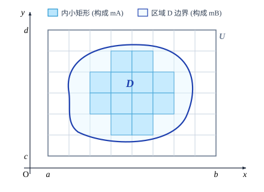
利用与讨论一元函数定积分的 Darboux 和类似的方法容易证明：若在原有划分的基础上，在 $[a, b]$ 和 $[c, d]$ 中再增加有限个分点（所得的新划分称为原来划分的加细），则 $mB$ 不增，$mA$ 不减；且任意一种划分所得到的 $mA$ 不大于任意一种划分所得到的 $mB$．
这样，这些 $mA$ 有一个上确界 $mD_*$，$mB$ 有一个下确界 $mD^*$，并且
$$ mD_* \le mD^*. $$若 $mD_* = mD^*$，则称这个值为 $D$ 的面积，记为 $mD$，此时称 $D$ 是可求面积的．
显然 $D$ 的面积与 $U$ 的选取无关．
同样可以考虑 $D$ 的边界 $\partial D$ 的面积．记与 $\partial D$ 的交集非空的那些小矩形的面积之和
为 $mB_{\partial D}$．显然 $mB_{\partial D} = mB - mA$．如果 $m(\partial D)^* = 0$，则称 $D$ 的边界 $\partial D$ 的面积为零，或称 $D$ 为零边界区域．
由实数完备性定理，$mD_* = mD^*$ 的充分必要条件是：对于任意给定的 $\varepsilon > 0$，存在 $U$ 的一种划分，使得
$$ mB - mA (= mB_{\partial D}) < \varepsilon. $$所以有
有界点集 $D$ 是可求面积的充分必要条件是它的边界 $\partial D$ 的面积为零，因此零边界区域是可求面积的．
面积具有可加性，就是说，如果有限点集 $D$ 由点集 $D_1$ 和 $D_2$ 组成，$D_1$ 和 $D_2$ 可求面积，且 $D_1^\circ \cap D_2^\circ = \varnothing$，那么 $D$ 可求面积，并满足
$$ mD = mD_1 + mD_2. $$这从直观上来说是显然的．
设 $y = f(x) \; (a \le x \le b)$ 为非负连续函数．则它与直线 $x = a, x = b$ 和 $x$ 轴所围成的区域 $D$ 是可求面积的（见图 13.1.2）．
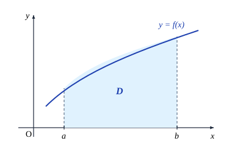
证 由于 $f$ 在 $[a, b]$ 上连续，那么它在 $[a, b]$ 上可积（在定积分意义下）．在 $[a, b]$ 上插入分点 $a = x_0 < x_1 < \cdots < x_n = b$ 将 $[a, b]$ $n$ 等分．记 $M = \max_{a \le x \le b} \{f(x)\}$，那么包含 $D$ 的一个闭矩形可取为 $U = [a, b] \times [0, M]$．把 $[0, M]$ 也作类似划分．由于 $f$ 在 $[x_{i-1}, x_i]$ 上的上确界与下确界分别为 $M_i$ 和 $m_i$（由于连续性，它们也就是最大值与最小值），那么对 $U$ 的每个划分，以 $[x_{i-1}, x_i]$ 为底的小矩形柱中，完全包含于 $D$ 内的那些小矩形的高度之和不小于 $m_i$，而与 $\bar{D}$ 的交集非空的那些小矩形的高度之和不大于 $M_i$．所以
$$ \sum_{i=1}^n m_i(x_i - x_{i-1}) \le mA \le mB \le \sum_{i=1}^n M_i(x_i - x_{i-1}). $$令 $n \to \infty$，由 $f$ 在 $[a, b]$ 上的可积性及极限的夹逼性得
$$ mD_* = mD^* = \int_a^b f(x)\mathrm{d}x. $$因此 $D$ 是可求面积的，且面积为 $\int_a^b f(x)\mathrm{d}x$．这与以前学过的知识相吻合．
在上例中，记曲线 $y = f(x) \; (a \le x \le b)$ 为 $L$，那么小矩形
$$ [x_{i-1}, x_i] \times [m_i, M_i], \quad i = 1, 2, \dots, n $$的全体包含 $L$，其面积为
$$ \sum_{i=1}^n (M_i - m_i)(x_i - x_{i-1}). $$当 $n \to \infty$ 时，它的极限是零．所以 $L$ 的面积为 $0$．
可以用同样方法进一步证明：平面上光滑曲线段的面积为 $0$．因此，若一个有界区域的边界是分段光滑曲线（即由有限条光滑曲线衔接而成的曲线），那么它是可求面积的．
注意，并不是所有有界平面点集都是可求面积的．例如，平面点集
$$ S = \{(x, y) \mid 0 \le x \le 1, 0 \le y \le D(x)\} $$就不可求面积，这里
$$ D(x) = \begin{cases} 1, & x \text{ 为有理数}, \\ 0, & x \text{ 为无理数} \end{cases} $$为 Dirichlet 函数．事实上，$S$ 的边界为 $\partial S = [0, 1] \times [0, 1]$，它的面积为 $1$．这说明 $S$ 不是可求面积的．
二重积分的概念
考察一个曲顶柱体：它的底是 $xy$ 平面上的具有零边界的有界闭区域 $D$，顶是非负连续函数 $z = f(x, y), (x, y) \in D$ 所确定的曲面，侧面是以 $D$ 的边界曲线为准线，母线平行于 $z$ 轴的柱面（见图 13.1.3）．
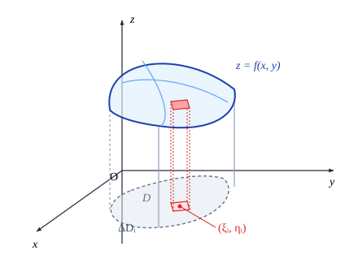
为了求出它的体积 $V$，我们先用一个面积为零的曲线段组成的曲线网将区域 $D$ 分成 $n$ 个小区域 $\Delta D_1, \Delta D_2, \dots, \Delta D_n$．由前面的讨论，每个 $\Delta D_i$ 都是可求面积的 ($i = 1, 2, \dots, n$)．再分别以这些小区域的边界为准线，作母线平行于 $z$ 轴的柱面，这些柱面将原曲顶柱体分成 $n$ 个细的小曲顶柱体．在每个 $\Delta D_i$ 上任取一点 $(\xi_i, \eta_i)$，那么以 $\Delta D_i$ 为底的小曲顶柱体的体积近似地等于
$$ f(\xi_i, \eta_i)\Delta \sigma_i, $$这里 $\Delta \sigma_i$ 表示 $\Delta D_i$ 的面积．于是，原曲顶柱体的体积近似地等于
$$ \sum_{i=1}^n f(\xi_i, \eta_i)\Delta \sigma_i. $$当所有的小区域 $\Delta D_i$ 的最大直径（记为 $\lambda$）趋于零时，这个近似值趋于原曲顶柱体的体积，即
$$ V = \lim_{\lambda \to 0} \sum_{i=1}^n f(\xi_i, \eta_i)\Delta \sigma_i. $$这就是二重积分的概念（以下讨论积分存在性时，总假定区域的边界以及用来分割区域的曲线段的面积为 $0$，这就保证了所涉及的一切区域的面积都存在）．
设 $D$ 为 $\mathbf{R}^2$ 上的零边界闭区域，函数 $z = f(x, y)$ 在 $D$ 上有界．将 $D$ 用曲线网分成 $n$ 个小区域 $\Delta D_1, \Delta D_2, \dots, \Delta D_n$①（它称为 $D$ 的一个划分），并记所有的小区域 $\Delta D_i$ 的最大直径为 $\lambda$，即
$$ \lambda = \max_{1 \le i \le n} \{\mathrm{diam}\, \Delta D_i\}. $$在每个 $\Delta D_i$ 上任取一点 $(\xi_i, \eta_i)$，记 $\Delta \sigma_i$ 为 $\Delta D_i$ 的面积，若 $\lambda$ 趋于零时，和式
① 用面积为零的曲线网对 $\mathbf{R}^2$ 上的有界闭区域 $D$ 分割时，可能会将它分成无穷块小区域，这时需要将它们归并成有限块．因此这里所说的小区域可能不是连通的，而是一些连通的小区域的并集．
$$ \sum_{i=1}^n f(\xi_i, \eta_i)\Delta \sigma_i $$的极限存在且与区域的分法和点 $(\xi_i, \eta_i)$ 的取法无关，则称 $f(x, y)$ 在 $D$ 上可积，并称此极限为 $f(x, y)$ 在 $D$ 上的二重积分，记为
$$ \iint_D f(x, y)\mathrm{d}\sigma \quad \left(= \lim_{\lambda \to 0} \sum_{i=1}^n f(\xi_i, \eta_i)\Delta \sigma_i\right). $$$f(x, y)$ 称为被积函数，$D$ 称为积分区域，$x$ 和 $y$ 称为积分变量，$\mathrm{d}\sigma$ 称为面积元素，$\iint_D f(x, y)\mathrm{d}\sigma$ 也称为积分值．
前面提到的曲顶柱体的体积即为
$$ V = \iint_D f(x, y)\mathrm{d}\sigma. $$与一元的情况类似，设 $M_i$ 和 $m_i$ 分别为 $f(x, y)$ 在 $\Delta D_i$ 上的上确界与下确界，定义 Darboux 大和为
$$ S = \sum_{i=1}^n M_i \Delta \sigma_i; $$Darboux 小和为
$$ s = \sum_{i=1}^n m_i \Delta \sigma_i. $$则有以下性质：
性质 1 若在已有的划分上添加有限条曲线作进一步划分，则 Darboux 大和不增，Darboux 小和不减．
性质 2 任何一个 Darboux 小和都不大于任何一个 Darboux 大和．因此，若记 $I^* = \inf \{S\}, I_* = \sup \{s\}$（这里上、下确界是对所有划分来取的），则有
$$ s \le I_* \le I^* \le S. $$性质 3 $f(x, y)$ 在 $D$ 上可积的充分必要条件是：
$$ \lim_{\lambda \to 0} (S - s) = 0, $$即
$$ \lim_{\lambda \to 0} \sum_{i=1}^n \omega_i \Delta \sigma_i = 0, $$这里 $\omega_i = M_i - m_i$ 是 $f(x, y)$ 在 $\Delta D_i$ 上的振幅．此时成立
$$ \lim_{\lambda \to 0} S = \lim_{\lambda \to 0} s = \iint_D f(x, y)\mathrm{d}\sigma. $$利用这个性质就可得到：
若 $f(x, y)$ 在零边界闭区域 $D$ 上连续，那么它在 $D$ 上可积．
证 记 $\sigma$ 为 $D$ 的面积．因为 $f(x, y)$ 在紧集 $D$ 上连续，所以它在 $D$ 上一致连续，于
是对于任意给定的 $\varepsilon > 0$，存在 $\delta > 0$，当 $\lambda < \delta$ 时，在每个 $\Delta D_i$ 上的振幅 $\omega_i$ 就小于 $\frac{\varepsilon}{\sigma}$，这就成立
$$ \sum_{i=1}^n \omega_i \Delta \sigma_i < \frac{\varepsilon}{\sigma} \sum_{i=1}^n \Delta \sigma_i = \varepsilon. $$证毕．
通过稍微复杂一点的证明，还可将定理中函数的条件放宽到 $f(x, y)$ 有界，但至多在有限条面积为零的曲线上不连续．
多重积分
同 $\mathbf{R}^2$ 中定义面积一样，可以在 $\mathbf{R}^n \; (n \ge 3)$ 中引入体积的概念．若定义 $\mathbf{R}^n$ 中的 $n$ 维矩形块 $[a_1, b_1] \times [a_2, b_2] \times \cdots \times [a_n, b_n]$ 的体积为 $\prod_{i=1}^n (b_i - a_i)$，那么可以完全将 $\mathbf{R}^2$ 上定义面积的叙述完全平移到 $\mathbf{R}^n \; (n \ge 3)$ 上来定义体积，并同样称边界体积为零的有界区域为零边界区域，而且可以证明光滑曲面片的体积为零，这里就不一一详述了．设 $\Omega$ 是 $\mathbf{R}^n \; (n \ge 3)$ 上的有界区域，其边界是一张或数张无重点的封闭曲面（本章总是如此假定），那么同样可得：有界点集 $\Omega$ 是可求体积的充分必要条件为其边界的体积为零，即 $\Omega$ 为零边界区域．
同 $\mathbf{R}^2$ 中的原理一样，我们引入 $n$ 重积分的概念：
设 $\Omega$ 为 $\mathbf{R}^n$ 上的零边界闭区域，函数 $u = f(\boldsymbol{x})$ 在 $\Omega$ 上有界．将 $\Omega$ 用曲面网分成 $n$ 个小区域 $\Delta \Omega_1, \Delta \Omega_2, \dots, \Delta \Omega_n$①（称为 $\Omega$ 的一个划分），记 $\Delta V_i$ 为 $\Delta \Omega_i$ 的体积，并记所有的小区域 $\Delta \Omega_i$ 的最大直径为 $\lambda$．在每个 $\Delta \Omega_i$ 上任取一点 $\boldsymbol{\xi}_i$，若 $\lambda$ 趋于零时，和式
$$ \sum_{i=1}^n f(\boldsymbol{\xi}_i)\Delta V_i $$的极限存在且与区域的分法和点 $\boldsymbol{\xi}_i$ 的取法无关，则称 $f(\boldsymbol{x})$ 在 $\Omega$ 上可积，并称此极限为 $f(\boldsymbol{x})$ 在有界闭区域 $\Omega$ 上的 $n$ 重积分，记为
$$ \int_\Omega f(\boldsymbol{x})\mathrm{d}V \quad \left(= \lim_{\lambda \to 0} \sum_{i=1}^n f(\boldsymbol{\xi}_i)\Delta V_i\right). $$① 这里对小区域的理解同在二重积分定义中一样．
$f(\boldsymbol{x})$ 称为被积函数，$\Omega$ 称为积分区域，$\boldsymbol{x}$ 称为积分变量，$\mathrm{d}V$ 称为体积元素，$\int_\Omega f(\boldsymbol{x})\mathrm{d}V$ 也称为积分值．
类似于二维情形可知，若 $f(\boldsymbol{x})$ 在零边界闭区域 $\Omega$ 上连续，那么它在 $\Omega$ 上可积．
注意到 $n = 2$ 与 $n > 2$ 的重积分定义并没有本质的区别，今后我们经常把它们一起讨论．为明确起见，通常采用如下记法：
在 $\mathbf{R}^2$ 中，$f(x, y)$ 在 $D$ 上的二重积分记为
$$ \iint_D f(x, y)\mathrm{d}x\mathrm{d}y; $$在 $\mathbf{R}^3$ 中，$f(x, y, z)$ 在 $\Omega$ 上的三重积分记为
$$ \iiint_\Omega f(x, y, z)\mathrm{d}x\mathrm{d}y\mathrm{d}z; $$而在 $\mathbf{R}^n$ 中，$f(x_1, x_2, \dots, x_n)$ 在 $\Omega$ 上的 $n$ 重积分记为
$$ \idotsint_\Omega f(x_1, x_2, \dots, x_n)\mathrm{d}x_1\mathrm{d}x_2\cdots\mathrm{d}x_n. $$重积分在物理和力学中有着广泛的应用．例如，设 $\Omega$ 是一块三维空间物体，$\rho(x, y, z)$ 为物体的体密度．将 $\Omega$ 用分片光滑曲面分成充分小的块 $\Delta \Omega_1, \Delta \Omega_2, \dots, \Delta \Omega_n$，那么 $\rho(\xi_i, \eta_i, \zeta_i)\Delta V_i$ 就近似地为 $\Delta \Omega_i$ 的质量，这里 $\Delta V_i$ 为 $\Delta \Omega_i$ 的体积，$(\xi_i, \eta_i, \zeta_i)$ 为 $\Delta \Omega_i$ 上任一点．于是，$\sum_{i=1}^n \rho(\xi_i, \eta_i, \zeta_i)\Delta V_i$ 就近似地表示 $\Omega$ 的质量．以 $\lambda$ 表示所有 $\Delta \Omega_i$ 的最大直径，则
$$ M = \lim_{\lambda \to 0} \sum_{i=1}^n \rho(\xi_i, \eta_i, \zeta_i)\Delta V_i = \iiint_\Omega \rho(x, y, z)\mathrm{d}x\mathrm{d}y\mathrm{d}z. $$现在来计算此物体的质心 $(\bar{x}, \bar{y}, \bar{z})$．
如果空间上有 $n$ 个质点，它们的质量分别为 $m_1, m_2, \dots, m_n$，且相应地位于点 $(x_1, y_1, z_1), (x_2, y_2, z_2), \dots, (x_n, y_n, z_n)$，那么这个质点系的质心坐标为
$$ \bar{x} = \frac{\sum_{i=1}^n m_i x_i}{\sum_{i=1}^n m_i}, \quad \bar{y} = \frac{\sum_{i=1}^n m_i y_i}{\sum_{i=1}^n m_i}, \quad \bar{z} = \frac{\sum_{i=1}^n m_i z_i}{\sum_{i=1}^n m_i}. $$当 $\lambda$ 充分小时，如果将 $\Delta \Omega_i$ 看成质点，$\rho(\xi_i, \eta_i, \zeta_i)\Delta V_i$ 就近似地为 $\Delta \Omega_i$ 的质量，其中 $(\xi_i, \eta_i, \zeta_i)$ 为 $\Delta \Omega_i$ 上任一点．那么其质心坐标为
$$ \bar{x} \approx \frac{\sum_{i=1}^n \xi_i \rho(\xi_i, \eta_i, \zeta_i)\Delta V_i}{\sum_{i=1}^n \rho(\xi_i, \eta_i, \zeta_i)\Delta V_i}, \quad \bar{y} \approx \frac{\sum_{i=1}^n \eta_i \rho(\xi_i, \eta_i, \zeta_i)\Delta V_i}{\sum_{i=1}^n \rho(\xi_i, \eta_i, \zeta_i)\Delta V_i}, \quad \bar{z} \approx \frac{\sum_{i=1}^n \zeta_i \rho(\xi_i, \eta_i, \zeta_i)\Delta V_i}{\sum_{i=1}^n \rho(\xi_i, \eta_i, \zeta_i)\Delta V_i}. $$因此当 $\lambda$ 趋于零就得到
$$ \bar{x} = \frac{\iiint_\Omega x\rho(x, y, z)\mathrm{d}x\mathrm{d}y\mathrm{d}z}{\iiint_\Omega \rho(x, y, z)\mathrm{d}x\mathrm{d}y\mathrm{d}z}, \quad \bar{y} = \frac{\iiint_\Omega y\rho(x, y, z)\mathrm{d}x\mathrm{d}y\mathrm{d}z}{\iiint_\Omega \rho(x, y, z)\mathrm{d}x\mathrm{d}y\mathrm{d}z}, \quad \bar{z} = \frac{\iiint_\Omega z\rho(x, y, z)\mathrm{d}x\mathrm{d}y\mathrm{d}z}{\iiint_\Omega \rho(x, y, z)\mathrm{d}x\mathrm{d}y\mathrm{d}z}. $$注意上式的分母就是 $\Omega$ 的质量．
Peano 曲线
值得注意的是，一条平面曲线所绘出的图形的面积并不一定是零．Peano 发现，存在将实轴上的闭区间映满平面上的一个二维区域（如三角形和正方形）的连续映射．也就是说，这条曲线通过该二维区域的每个点，这种曲线被称为 Peano 曲线．
以下我们给出一个将 $[0, 1]$ 映满平面上边长为 $1/2$ 的正三角形的连续映射的大致构造，具体细节请有兴趣的读者补上．
设 $\Delta$ 为平面上边长为 $1/2$ 的闭正三角形．作连续映射 $f_1: [0, 1] \to \Delta$，使得它的像是三角形的一个顶点到重心再到另一个顶点的折线，如图 13.1.4 所示．将 $\Delta$ 分为四个全等三角形，再作 $f_2: [0, 1] \to \Delta$，使得 $f_2$ 在每个区间
$$ \left[\frac{i}{4}, \frac{i+1}{4}\right] \quad (i = 0, 1, 2, 3) $$上的像分别完全落在一个小三角形 $\Delta_i \; (i = 0, 1, 2, 3)$ 上，且 $f_2$ 的像在小三角形 $\Delta_i$ 的部分恰如 $f_1$ 的像，如图 13.1.5 所示．继续将每个小三角形 $\Delta_i$ 分为四个更小的全等三角形，作连续映射 $f_3: [0, 1] \to \Delta$，使得 $f_3$ 在每个区间
$$ \left[\frac{i}{16}, \frac{i+1}{16}\right] \quad (i = 0, 1, \dots, 15) $$上的像分别完全落在一个小三角形 $\Delta_i$ 上，$f_3$ 在这个区间上的构造完全类似于 $f_1$ 在 $[0, 1]$ 上的构造，而且 $f_3$ 的像在更小的三角形的部分恰如 $f_1$ 的像，如图 13.1.6 所示．如此继续下去，将正三角形 $\Delta$ 等分为 $4^n$ 个小全等三角形，用归纳法可作出连续映射 $f_n: [0, 1] \to \Delta$，使得从 $f_{n-1}$ 到 $f_n$ 的构造完全类似于从 $f_2$ 到 $f_3$ 的构造，且 $f_n$ 的像在每个小三角形的部分恰如 $f_1$ 的像．这样就可以构造一个连续映射序列 $\{f_n\}$．
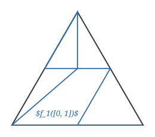
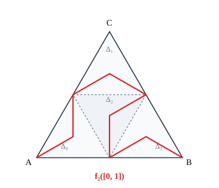
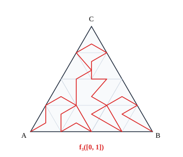
由序列 $\{f_n\}$ 的构造可知，若 $m \le n$，则对于每个 $t \in [0, 1]$，可以找到边长为 $1/2^m$ 的小三角形同时含有 $f_m(t)$ 和 $f_n(t)$，因此在 $[0, 1]$ 上成立
$$ |f_m(t) - f_n(t)| \le 1/2^m, $$于是连续映射序列 $\{f_n\}$ 在 $[0, 1]$ 上一致收敛于一个连续映射 $f: [0, 1] \to \Delta$，且 $f$ 满足
$$ |f_m(t) - f(t)| \le 1/2^m, \quad t \in [0, 1]. $$现在证明 $f$ 的像为整个 $\Delta$．
首先证明 $\Delta$ 上每一点都是 $f$ 的像集的聚点．从 $\{f_n\}$ 的构造可知：$f_n$ 的像到 $\Delta$ 上任一点的距离不超过 $1/2^n$（关于点与点集的距离的定义见第十一章第三节习题 4）．对于 $\Delta$ 上任一点 $a$ 及 $a$ 的任一邻域 $U$，取 $N$ 充分大，使得 $O(a, 1/2^N) \subset U$，并且取 $t_0 \in [0, 1]$，使得
$$ |a - f_N(t_0)| \le 1/2^N. $$因此
$$ |a - f(t_0)| \le |a - f_N(t_0)| + |f_N(t_0) - f(t_0)| \le 1/2^N + 1/2^N = 1/2^{N-1}. $$由此可知，$a$ 是 $f([0, 1])$ 的聚点．
显然 $f([0, 1]) \subset \Delta$．而 $f$ 为连续映射，所以 $f([0, 1])$ 为紧集，因此是闭集，所以 $f([0, 1])$ 包含它的所有聚点，因此 $f([0, 1]) = \Delta$，即 $f$ 的像为整个 $\Delta$．
-
设一平面薄板（不计其厚度），它在 $xy$ 平面上的表示是由光滑的简单闭曲线围成的闭区域 $D$．如果该薄板分布有面密度为 $\mu(x, y)$ 的电荷，且 $\mu(x, y)$ 在 $D$ 上连续，试用二重积分表示该薄板上的全部电荷．
-
设函数 $f(x, y)$ 在矩形 $D = [0, \pi] \times [0, 1]$ 上有界，而且除了曲线段 $y = \sin x, 0 \le x \le \pi$ 外，$f(x, y)$ 在 $D$ 上其他点连续．证明 $f$ 在 $D$ 上可积．
-
按定义计算二重积分 $\iint_D xy \mathrm{d}x\mathrm{d}y$，其中 $D = [0, 1] \times [0, 1]$．
-
设一元函数 $f(x)$ 在 $[a, b]$ 上可积，$D = [a, b] \times [c, d]$．定义二元函数 $$ F(x, y) = f(x), \quad (x, y) \in D. $$ 证明 $F(x, y)$ 在 $D$ 上可积．
-
设 $D$ 是 $\mathbf{R}^2$ 上的零边界闭区域，二元函数 $f(x, y)$ 和 $g(x, y)$ 在 $D$ 上可积．证明 $$ H(x, y) = \max\{f(x, y), g(x, y)\} $$ 和 $$ h(x, y) = \min\{f(x, y), g(x, y)\} $$ 也在 $D$ 上可积．
§2 重积分的性质与计算
重积分的性质
定义重积分的思想方法与定义定积分是一致的，因此它们的性质也是类似的，以下性质请读者参照一元的情况自行加以证明．
除非特别声明，本节中总假定考虑的区域是 $\mathbf{R}^n \; (n \ge 2)$ 中的零边界闭区域．
性质 1（线性性） 设 $f$ 和 $g$ 都在区域 $\Omega$ 上可积，$\alpha, \beta$ 为常数，则 $\alpha f + \beta g$ 在 $\Omega$ 上也可积，并且
$$ \int_\Omega (\alpha f + \beta g)\mathrm{d}V = \alpha \int_\Omega f \mathrm{d}V + \beta \int_\Omega g \mathrm{d}V. $$性质 2（区域可加性） 设区域 $\Omega$ 被分成两个内点不相交的区域 $\Omega_1$ 和 $\Omega_2$，如果 $f$ 在 $\Omega$ 上可积，则 $f$ 在 $\Omega_1$ 和 $\Omega_2$ 上都可积；反之，如果 $f$ 在 $\Omega_1$ 和 $\Omega_2$ 上可积，则 $f$ 也在 $\Omega$ 上可积．此时成立
$$ \int_\Omega f \mathrm{d}V = \int_{\Omega_1} f \mathrm{d}V + \int_{\Omega_2} f \mathrm{d}V. $$性质 3 设被积函数 $f \equiv 1$．当 $n = 2$ 时
$$ \iint_\Omega 1\mathrm{d}\sigma = \iint_\Omega \mathrm{d}x\mathrm{d}y = \Omega \text{ 的面积}; $$当 $n \ge 3$ 时
$$ \int_\Omega 1\mathrm{d}V = \Omega \text{ 的体积}. $$性质 4（保序性） 设 $f$ 和 $g$ 都在区域 $\Omega$ 上可积，且满足 $f \le g$，则成立不等式
$$ \int_\Omega f \mathrm{d}V \le \int_\Omega g \mathrm{d}V. $$性质 5 设 $f$ 在区域 $\Omega$ 上可积，$M$ 与 $m$ 分别为 $f$ 在 $\Omega$ 上的上确界和下确界，则成立不等式
$$ mV \le \int_\Omega f \mathrm{d}V \le MV, $$其中 $V$ 当 $n = 2$ 时为 $\Omega$ 的面积，当 $n > 2$ 时为 $\Omega$ 的体积．
性质 5 是性质 4 的直接推论．
性质 6（绝对可积性） 设 $f$ 在区域 $\Omega$ 上可积，则 $|f|$ 也在 $\Omega$ 上可积，且成立不等式
$$ \left|\int_\Omega f \mathrm{d}V\right| \le \int_\Omega |f| \mathrm{d}V. $$性质 7（乘积可积性） 设 $f$ 和 $g$ 都在区域 $\Omega$ 上可积，则 $f \cdot g$ 也在 $\Omega$ 上可积．
性质 8（积分中值定理） 设 $f$ 和 $g$ 都在区域 $\Omega$ 上可积，且 $g$ 在 $\Omega$ 上不变号．设 $M$ 与 $m$ 分别为 $f$ 在 $\Omega$ 上的上确界和下确界，则存在常数 $\mu \in [m, M]$，使得
$$ \int_\Omega fg \mathrm{d}V = \mu \int_\Omega g \mathrm{d}V. $$特别地，如果 $f$ 在 $\Omega$ 上连续，则存在 $\boldsymbol{\xi} \in \Omega$，使得
$$ \int_\Omega fg \mathrm{d}V = f(\boldsymbol{\xi})\int_\Omega g \mathrm{d}V. $$矩形区域上的重积分计算
设 $D = [a, b] \times [c, d]$ 是 $\mathbf{R}^2$ 上的闭矩形，$z = f(x, y)$ 是 $D$ 上的非负连续函数，则以 $D$ 为底、曲面 $z = f(x, y)$ 为顶的曲顶柱体的体积 $V$ 正是二重积分
$$ \iint_D f(x, y)\mathrm{d}x\mathrm{d}y. $$但若换一个角度来看，这块柱体被过 $(x, 0, 0) \; (a \le x \le b)$ 点，且与 $yz$ 平面平行的平面所截的截面是曲边梯形（见图 13.2.1），其面积为
$$ A(x) = \int_c^d f(x, y)\mathrm{d}y. $$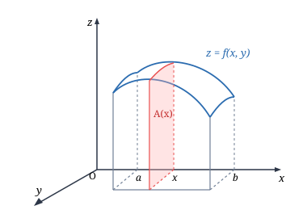
利用定积分中的结论，即知此曲顶柱体的体积
$$ V = \int_a^b A(x)\mathrm{d}x = \int_a^b \left(\int_c^d f(x, y)\mathrm{d}y\right)\mathrm{d}x. $$$\int_a^b \left(\int_c^d f(x, y)\mathrm{d}y\right)\mathrm{d}x$ 称为 $f(x, y)$ 先对 $y$，再对 $x$ 的累次积分，习惯上写成 $\int_a^b \mathrm{d}x \int_c^d f(x, y)\mathrm{d}y$．因此有等式
$$ \iint_D f(x, y)\mathrm{d}x\mathrm{d}y = \int_a^b \mathrm{d}x \int_c^d f(x, y)\mathrm{d}y. $$这个几何方法提示我们：重积分可以通过累次积分来计算，这正是求重积分的关键所在，它可以如下严格叙述和证明．
设二元函数 $f(x, y)$ 在闭矩形 $D = [a, b] \times [c, d]$ 上可积．若积分
$$ h(x) = \int_c^d f(x, y)\mathrm{d}y $$对于每个 $x \in [a, b]$ 存在，则 $h(x)$ 在 $[a, b]$ 上可积，并有等式
$$ \iint_D f(x, y)\mathrm{d}x\mathrm{d}y = \int_a^b h(x)\mathrm{d}x = \int_a^b \left(\int_c^d f(x, y)\mathrm{d}y\right)\mathrm{d}x = \int_a^b \mathrm{d}x \int_c^d f(x, y)\mathrm{d}y. $$证 在 $[a, b]$ 中插入分点
$$ a = x_0 < x_1 < \cdots < x_n = b, $$并记 $\Delta x_i = x_i - x_{i-1} \; (i = 1, 2, \dots, n)$．显然，要得到定理的结论，只要证明
$$ \lim_{\lambda \to 0} \sum_{i=1}^n h(\xi_i)\Delta x_i = \iint_D f(x, y)\mathrm{d}x\mathrm{d}y, $$这里 $\xi_i$ 为 $[x_{i-1}, x_i]$ 中任意一点，$\lambda$ 为所有 $\Delta x_i$ 的最大者．
再在 $[c, d]$ 中插入分点
$$ c = y_0 < y_1 < \cdots < y_m = d, $$过这些分点作平行于坐标轴的直线将 $D$ 分成许多小矩形（这是 $D$ 的一个划分），并记
$$ D_{ij} = [x_{i-1}, x_i] \times [y_{j-1}, y_j], \quad i = 1, 2, \dots, n; \; j = 1, 2, \dots, m. $$记
$$ m_{ij} = \inf_{(x, y) \in D_{ij}} \{f(x, y)\}, \quad M_{ij} = \sup_{(x, y) \in D_{ij}} \{f(x, y)\}. $$由于 $\xi_i \in [x_{i-1}, x_i]$，所以
$$ \sum_{j=1}^m m_{ij}\Delta y_j \le \int_c^d f(\xi_i, y)\mathrm{d}y = h(\xi_i) \le \sum_{j=1}^m M_{ij}\Delta y_j. $$将这些不等式分别乘以 $\Delta x_i$，再把它们逐个加起来就得
$$ \sum_{i=1}^n \sum_{j=1}^m m_{ij}\Delta x_i \Delta y_j \le \sum_{i=1}^n h(\xi_i)\Delta x_i \le \sum_{i=1}^n \sum_{j=1}^m M_{ij}\Delta x_i \Delta y_j. $$注意到这个不等式的左右两端正是 $f(x, y)$ 在所作划分上的 Darboux 小和与大和．由于 $f(x, y)$ 在 $D$ 上可积，当所有 $\Delta x_i, \Delta y_j$ 都趋于零时，这个不等式两端都趋于 $\iint_D f(x, y)\mathrm{d}x\mathrm{d}y$．由极限的夹逼性，即得到
$$ \lim_{\lambda \to 0} \sum_{i=1}^n h(\xi_i)\Delta x_i = \iint_D f(x, y)\mathrm{d}x\mathrm{d}y. $$证毕．
可以同样推出，若 $f(x, y)$ 在 $D = [a, b] \times [c, d]$ 上可积，且对所有 $y \in [c, d]$，积分 $\int_a^b f(x, y)\mathrm{d}x$ 存在，则成立
$$ \iint_D f(x, y)\mathrm{d}x\mathrm{d}y = \int_c^d \mathrm{d}y \int_a^b f(x, y)\mathrm{d}x. $$特别地，从定理 13.2.1 直接得到：设一元函数 $f(x)$ 在闭区间 $[a, b]$ 上可积，$g(y)$ 在
闭区间 $[c, d]$ 上可积，则成立
$$ \iint_{[a, b] \times [c, d]} f(x)g(y)\mathrm{d}x\mathrm{d}y = \int_a^b \left(\int_c^d f(x)g(y)\mathrm{d}y\right)\mathrm{d}x = \int_a^b f(x)\left(\int_c^d g(y)\mathrm{d}y\right)\mathrm{d}x = \int_a^b f(x)\mathrm{d}x \cdot \int_c^d g(y)\mathrm{d}y. $$计算柱面 $x^2 + z^2 \le R^2$ 与平面 $y = 0$ 和 $y = a \; (a > 0)$ 所围立体的体积（见图 13.2.2）．
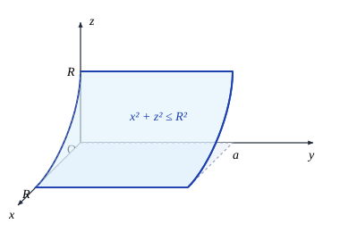
解 由对称性，所求立体的体积 $V$ 是该立体在第一卦限部分的体积的 4 倍．而它在第一卦限的部分正是以曲面 $z = \sqrt{R^2 - x^2}$ 为顶，以矩形 $D = [0, R] \times [0, a]$ 为底的曲顶柱体．因此
$$ V = 4 \iint_D \sqrt{R^2 - x^2}\mathrm{d}x\mathrm{d}y = 4 \int_0^a \mathrm{d}y \int_0^R \sqrt{R^2 - x^2}\mathrm{d}x = 4a \int_0^R \sqrt{R^2 - x^2}\mathrm{d}x = a\pi R^2. $$注意并不是所有重积分都能化为累次积分来计算．例如，设 $D = [0, 1] \times [0, 1]$，
$$ f(x, y) = \begin{cases} \frac{1}{q_x}, & x = \frac{p_x}{q_x}, y = \frac{p_y}{q_y} \text{ 均为既约分数}, \\ 0, & \text{其他点}. \end{cases} $$易证明 $f(x, y)$ 在 $D$ 上可积，且
$$ \iint_D f(x, y)\mathrm{d}x\mathrm{d}y = 0. $$但它的两个累次积分都不存在．请读者自己把细节补上．
下面的定理是定理 13.2.1 在 $\mathbf{R}^n$ 上的直接推广，其证明方法也类似．
设函数 $f(x_1, x_2, \dots, x_n)$ 在闭矩形 $\Omega = [a_1, b_1] \times [a_2, b_2] \times \cdots \times [a_n, b_n]$ 上可积，记 $\Omega_* = [a_2, b_2] \times \cdots \times [a_n, b_n]$．若积分
$$ h(x_1) = \int_{\Omega_*} f(x_1, x_2, \dots, x_n)\mathrm{d}x_2 \cdots \mathrm{d}x_n $$对于每个 $x_1 \in [a_1, b_1]$ 存在，则 $h(x_1)$ 在 $[a_1, b_1]$ 上可积，并成立
$$ \int_\Omega f(x_1, x_2, \dots, x_n)\mathrm{d}x_1 \cdots \mathrm{d}x_n = \int_{a_1}^{b_1} h(x_1)\mathrm{d}x_1 = \int_{a_1}^{b_1} \mathrm{d}x_1 \int_{\Omega_*} f(x_1, x_2, \dots, x_n)\mathrm{d}x_2 \cdots \mathrm{d}x_n. $$证明留给读者．
特别，当 $n = 2$ 时，这就是定理 13.2.1；当 $n = 3$ 时，记 $\Omega = [a, b] \times [c, d] \times [e, f], \Omega_* = [c, d] \times [e, f]$，那么上式成为
$$ \iiint_\Omega f(x, y, z)\mathrm{d}x\mathrm{d}y\mathrm{d}z = \int_a^b \mathrm{d}x \iint_{\Omega_*} f(x, y, z)\mathrm{d}y\mathrm{d}z. $$从定理 13.2.2 直接得到：
若函数 $f(x_1, x_2, \dots, x_n)$ 在闭矩形 $\Omega = [a_1, b_1] \times [a_2, b_2] \times \cdots \times [a_n, b_n]$ 上连续，则有
$$ \int_\Omega f(x_1, x_2, \dots, x_n)\mathrm{d}x_1 \cdots \mathrm{d}x_n = \int_{a_1}^{b_1} \mathrm{d}x_1 \int_{a_2}^{b_2} \mathrm{d}x_2 \cdots \int_{a_n}^{b_n} f(x_1, x_2, \dots, x_n)\mathrm{d}x_n. $$正像二重积分在一定条件下可以化为两种不同的累次积分一样，在 $n > 2$ 时，$n$ 重积分也可以化为先对某个变量作定积分，再对其余 $n-1$ 个变量作重积分的累次积分．例如，如果 $f(x, y, z)$ 在 $\Omega = [a, b] \times [c, d] \times [e, f]$ 可积，并且对于每个 $(y, z) \in \Omega_* = [c, d] \times [e, f]$，$\int_a^b f(x, y, z)\mathrm{d}x$ 都存在，那么
$$ \iiint_\Omega f(x, y, z)\mathrm{d}x\mathrm{d}y\mathrm{d}z = \iint_{\Omega_*} \left(\int_a^b f(x, y, z)\mathrm{d}x\right)\mathrm{d}y\mathrm{d}z = \iint_{\Omega_*} \mathrm{d}y\mathrm{d}z \int_a^b f(x, y, z)\mathrm{d}x, $$其中右边的式子是中间式子的记号．
一般区域上的重积分计算
现在考虑 $f(x, y)$ 在一般区域上的二重积分．设 $f(x, y)$ 在区域
$$ D = \{(x, y) \mid y_1(x) \le y \le y_2(x), a \le x \le b\} $$上连续，其中 $y_1(x), y_2(x)$ 为 $[a, b]$ 上的一元连续函数．
令 $c = \min_{a \le x \le b} y_1(x), d = \max_{a \le x \le b} y_2(x)$，作闭矩形（见图 13.2.3）
$$ \tilde{D} = [a, b] \times [c, d] \supset D. $$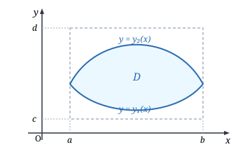
令
$$ \tilde{f}(x, y) = \begin{cases} f(x, y), & (x, y) \in D, \\ 0, & (x, y) \in \tilde{D} \setminus D, \end{cases} $$易证明 $\tilde{f}(x, y)$ 在 $\tilde{D}$ 上也可积．注意到 $\tilde{f}(x, y)$ 在 $D$ 外为零，就得到
$$ \begin{aligned} \int_c^d \tilde{f}(x, y)\mathrm{d}y &= \int_c^{y_1(x)} \tilde{f}(x, y)\mathrm{d}y + \int_{y_1(x)}^{y_2(x)} \tilde{f}(x, y)\mathrm{d}y + \int_{y_2(x)}^d \tilde{f}(x, y)\mathrm{d}y \\ &= \int_{y_1(x)}^{y_2(x)} \tilde{f}(x, y)\mathrm{d}y = \int_{y_1(x)}^{y_2(x)} f(x, y)\mathrm{d}y. \end{aligned} $$由于 $f$ 在 $D$ 上连续，以上积分对每个 $x \in [a, b]$ 总存在．因此
$$ \iint_D f(x, y)\mathrm{d}x\mathrm{d}y = \iint_{\tilde{D}} \tilde{f}(x, y)\mathrm{d}x\mathrm{d}y = \int_a^b \mathrm{d}x \int_c^d \tilde{f}(x, y)\mathrm{d}y = \int_a^b \mathrm{d}x \int_{y_1(x)}^{y_2(x)} f(x, y)\mathrm{d}y. $$同样，若 $f(x, y)$ 在 $D = \{(x, y) \mid x_1(y) \le x \le x_2(y), c \le y \le d\}$ 上连续，其中 $x_1(y), x_2(y)$ 在 $[c, d]$ 上连续，则有
$$ \iint_D f(x, y)\mathrm{d}x\mathrm{d}y = \int_c^d \mathrm{d}y \int_{x_1(y)}^{x_2(y)} f(x, y)\mathrm{d}x. $$同样，在三维情形，若 $f(x, y, z)$ 在
$$ \Omega = \{(x, y, z) \mid z_1(x, y) \le z \le z_2(x, y), y_1(x) \le y \le y_2(x), a \le x \le b\} $$上连续，则成立
$$ \iiint_\Omega f(x, y, z)\mathrm{d}x\mathrm{d}y\mathrm{d}z = \iint_{\Omega_{xy}} \mathrm{d}x\mathrm{d}y \int_{z_1(x, y)}^{z_2(x, y)} f(x, y, z)\mathrm{d}z = \int_a^b \mathrm{d}x \int_{y_1(x)}^{y_2(x)} \mathrm{d}y \int_{z_1(x, y)}^{z_2(x, y)} f(x, y, z)\mathrm{d}z, $$其中 $\Omega_{xy} = \{(x, y) \mid y_1(x) \le y \le y_2(x), a \le x \le b\}$ 为区域 $\Omega$ 在 $xy$ 平面的投影．
利用类似的思想方法还可得到：设 $\Omega$ 为限制在平面 $z = e$ 和 $z = f$ 之间的一个具有分片光滑边界的区域，过 $(0, 0, z) \; (e \le z \le f)$ 且与 $xy$ 平面平行的平面截 $\Omega$ 成一个图形，记这个图形在 $xy$ 平面的投影区域为 $\Omega_z$．若 $f(x, y, z)$ 是 $\Omega$ 上的连续函数，则成立以下公式：
$$ \iiint_\Omega f(x, y, z)\mathrm{d}x\mathrm{d}y\mathrm{d}z = \int_e^f \mathrm{d}z \iint_{\Omega_z} f(x, y, z)\mathrm{d}x\mathrm{d}y. $$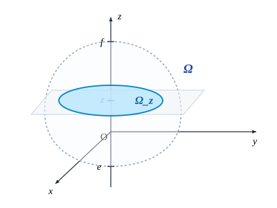
对于不同类型的区域，也可视方便按不同顺序对变量 $x, y, z$ 进行逐次积分，这里不一一叙述了．
计算 $\iint_D xy \mathrm{d}x\mathrm{d}y$，$D$ 为抛物线 $y^2 = x$ 和直线 $y = x - 2$ 所围成的闭区域．
解法一 化为先对 $y$ 后对 $x$ 的累次积分．这时，区域边界的下部是由两段不同的曲线组成的，因此用直线 $x = 1$ 将 $D$ 分为 $D_1 = \{(x, y) \mid -\sqrt{x} \le y \le \sqrt{x}, 0 \le x \le 1\}$ 和 $D_2 = \{(x, y) \mid x - 2 \le y \le \sqrt{x}, 1 \le x \le 4\}$ 两部分（见图 13.2.5）．那么
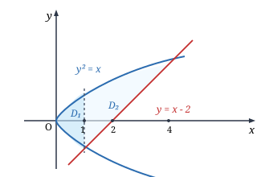
解法二 化为先对 $x$ 后对 $y$ 的累次积分来计算，这时 $D$ 可统一表示为 $\{(x, y) \mid y^2 \le x \le y + 2, -1 \le y \le 2\}$．因此
$$ \iint_D xy \mathrm{d}x\mathrm{d}y = \int_{-1}^2 \mathrm{d}y \int_{y^2}^{y+2} xy \mathrm{d}x = \frac{1}{2} \int_{-1}^2 y[(y + 2)^2 - y^4]\mathrm{d}y = \frac{45}{8}. $$显然，第二种解法较为简单．
计算 $\iint_D \sin x^2 \mathrm{d}x\mathrm{d}y$，$D$ 为 $y = 0, x = \sqrt{\pi/2}$ 和 $y = x$ 所围成的闭区域（见图 13.2.6）．
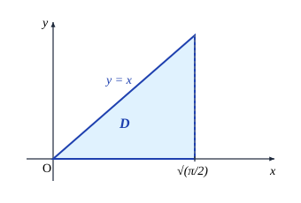
解 若将此积分化为先对 $x$ 后对 $y$ 的累次积分
$$ \iint_D \sin x^2 \mathrm{d}x\mathrm{d}y = \int_0^{\sqrt{\pi/2}} \mathrm{d}y \int_y^{\sqrt{\pi/2}} \sin x^2 \mathrm{d}x, $$但这个积分是积不出来的．但若化为先对 $y$ 后对 $x$ 的累次积分就得
$$ \iint_D \sin x^2 \mathrm{d}x\mathrm{d}y = \int_0^{\sqrt{\pi/2}} \mathrm{d}x \int_0^x \sin x^2 \mathrm{d}y = \int_0^{\sqrt{\pi/2}} x\sin x^2 \mathrm{d}x = \frac{1}{2}. $$由此可见，适当选取累次积分次序非常重要．
求抛物柱面 $2y^2 = x$，平面 $\frac{x}{4} + \frac{y}{2} + \frac{z}{2} = 1$ 和 $z = 0$ 所围立体的体积（见图 13.2.7）．
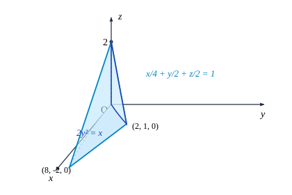
解 这个立体的顶的方程为 $\frac{x}{4} + \frac{y}{2} + \frac{z}{2} = 1$，即 $z = 2 - y - \frac{x}{2}$，底为 $xy$ 平面上由直线 $\frac{x}{4} + \frac{y}{2} = 1$ 和抛物线 $2y^2 = x$ 所围成的区域 $D$，因此它的体积为
$$ \begin{aligned} V &= \iint_D \left(2 - y - \frac{x}{2}\right)\mathrm{d}x\mathrm{d}y = \int_{-2}^1 \mathrm{d}y \int_{2y^2}^{4-2y} \left(2 - y - \frac{x}{2}\right)\mathrm{d}x \\ &= \int_{-2}^1 (4 - 4y - 3y^2 + 2y^3 + y^4)\mathrm{d}y = \frac{81}{10}. \end{aligned} $$一非均匀金属块在空间的表示是由双曲抛物面 $z = xy$，平面 $x + y = 1$ 和 $z = 0$ 所围成的区域 $\Omega$，其密度函数为 $\rho(x, y, z) = xy$．求它的质量．
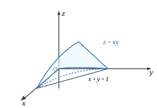
解 如图 13.2.8 所示，$\Omega$ 可表为
$$ \Omega = \{(x, y, z) \mid 0 \le z \le xy, 0 \le y \le 1 - x, 0 \le x \le 1\}, $$因此金属块的质量为
$$ \begin{aligned} M &= \iiint_\Omega \rho(x, y, z)\mathrm{d}x\mathrm{d}y\mathrm{d}z = \iiint_\Omega xy \mathrm{d}x\mathrm{d}y\mathrm{d}z = \int_0^1 \mathrm{d}x \int_0^{1-x} \mathrm{d}y \int_0^{xy} xy \mathrm{d}z \\ &= \int_0^1 \mathrm{d}x \int_0^{1-x} x^2 y^2 \mathrm{d}y = \frac{1}{3} \int_0^1 x^2(1 - x)^3 \mathrm{d}x = \frac{1}{180}. \end{aligned} $$计算 $I = \iiint_\Omega z^2 \mathrm{d}x\mathrm{d}y\mathrm{d}z$，其中 $\Omega$ 是由锥面 $z^2 = \frac{h^2}{R^2}(x^2 + y^2)$ 与平面 $z = h$ 所围成的闭区域（见图 13.2.9）．
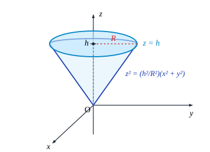
解 这时 $\Omega$ 可表为
$$ \Omega = \left\{(x, y, z) \;\middle|\; 0 \le z \le h, \frac{h^2}{R^2}(x^2 + y^2) \le z^2\right\}, $$因此
$$ I = \iiint_\Omega z^2 \mathrm{d}x\mathrm{d}y\mathrm{d}z = \int_0^h \mathrm{d}z \iint_{\Omega_z} z^2 \mathrm{d}x\mathrm{d}y = \int_0^h z^2 \mathrm{d}z \iint_{\Omega_z} \mathrm{d}x\mathrm{d}y, $$这里对于每个 $z$，$\Omega_z$ 为过 $(0, 0, z)$ 点且平行于 $xy$ 平面的平面截 $\Omega$ 所得图形在 $xy$ 平面的投影，它为区域 $\left\{(x, y) \;\middle|\; \frac{h^2}{R^2}(x^2 + y^2) \le z^2\right\}$，其面积为 $\pi \frac{R^2}{h^2} z^2$，即 $\iint_{\Omega_z}\mathrm{d}x\mathrm{d}y = \pi \frac{R^2}{h^2} z^2$．因此
$$ I = \frac{\pi R^2}{h^2} \int_0^h z^4 \mathrm{d}z = \frac{\pi R^2 h^3}{5}. $$求 $\mathbf{R}^n$ 中几何体
$$ T_n = \left\{(x_1, x_2, \dots, x_n) \in \mathbf{R}^n \;\middle|\; x_1 + x_2 + \cdots + x_n \le h, x_1 \ge 0, x_2 \ge 0, \dots, x_n \ge 0\right\} \quad (h > 0) $$（它称为 $n$ 维单纯形）的体积．
解 当 $n = 2$ 时，$T_2$ 的体积为
$$ \iint_{T_2} \mathrm{d}x_1\mathrm{d}x_2 = \int_0^h \mathrm{d}x_1 \int_0^{h-x_1}\mathrm{d}x_2 = \int_0^h (h - x_1)\mathrm{d}x_1 = \frac{h^2}{2}; $$当 $n = 3$ 时，$T_3$ 的体积为
$$ \iiint_{T_3} \mathrm{d}x_1\mathrm{d}x_2\mathrm{d}x_3 = \int_0^h \mathrm{d}x_1 \iint_{\substack{x_2 \ge 0, x_3 \ge 0 \\ x_2+x_3 \le h-x_1}} \mathrm{d}x_2\mathrm{d}x_3 = \int_0^h \frac{(h - x_1)^2}{2}\mathrm{d}x_1 = \frac{h^3}{3!}. $$设 $T_{n-1}$ 的体积为
$$ \int_{T_{n-1}} \mathrm{d}x_1\mathrm{d}x_2\cdots\mathrm{d}x_{n-1} = \frac{h^{n-1}}{(n-1)!}, $$则利用上式得 $T_n$ 的体积为
$$ \int_{T_n}\mathrm{d}x_1\mathrm{d}x_2\cdots\mathrm{d}x_n = \int_0^h \mathrm{d}x_1 \int_{\substack{x_2 \ge 0, x_3 \ge 0, \dots, x_n \ge 0 \\ x_2+x_3+\cdots+x_n \le h-x_1}} \mathrm{d}x_2\mathrm{d}x_3\cdots\mathrm{d}x_n = \int_0^h \frac{(h - x_1)^{n-1}}{(n-1)!}\mathrm{d}x_1 = \frac{h^n}{n!}. $$-
证明重积分的性质 8．
-
根据二重积分的性质，比较下列积分的大小：
- $\iint_D (x + y)^2\mathrm{d}x\mathrm{d}y$ 与 $\iint_D (x + y)^3\mathrm{d}x\mathrm{d}y$，其中 $D$ 为 $x$ 轴，$y$ 轴与直线 $x + y = 1$ 所围的区域；
- $\iint_D \ln(x + y)\mathrm{d}x\mathrm{d}y$ 与 $\iint_D [\ln(x + y)]^2\mathrm{d}x\mathrm{d}y$，其中 $D$ 为闭矩形 $[3, 5] \times [0, 1]$．
-
利用重积分的性质估计下列重积分的值：
- $\iint_D xy(x + y)\mathrm{d}x\mathrm{d}y$，其中 $D$ 为闭矩形 $[0, 1] \times [0, 1]$；
- $\iint_D \frac{\mathrm{d}x\mathrm{d}y}{100 + \cos^2 x + \cos^2 y}$，其中 $D$ 为区域 $\{(x, y) \mid |x| + |y| \le 10\}$；
- $\iiint_\Omega \frac{\mathrm{d}x\mathrm{d}y\mathrm{d}z}{1 + x^2 + y^2 + z^2}$，其中 $\Omega$ 为单位球 $\{(x, y, z) \mid x^2 + y^2 + z^2 \le 1\}$．
-
计算下列重积分：
- $\iint_D (x^3 + 3x^2 y + y^3)\mathrm{d}x\mathrm{d}y$，其中 $D$ 为闭矩形 $[0, 1] \times [0, 1]$；
- $\iint_D xy \mathrm{e}^{x^2 + y^2}\mathrm{d}x\mathrm{d}y$，其中 $D$ 为闭矩形 $[a, b] \times [c, d]$；
- $\iiint_\Omega \frac{\mathrm{d}x\mathrm{d}y\mathrm{d}z}{(x + y + z)^3}$，其中 $\Omega$ 为长方体 $[1, 2] \times [1, 2] \times [1, 2]$．
-
在下列积分中改变累次积分的次序：
- $\int_a^b \mathrm{d}x \int_a^x f(x, y)\mathrm{d}y \quad (a < b)$；
- $\int_0^{2a}\mathrm{d}x \int_{\sqrt{2ax - x^2}}^{\sqrt{2ax}} f(x, y)\mathrm{d}y \quad (a > 0)$；
- $\int_0^{2\pi}\mathrm{d}x \int_0^{\sin x} f(x, y)\mathrm{d}y$；
- $\int_0^1 \mathrm{d}y \int_0^{2y} f(x, y)\mathrm{d}x + \int_1^3 \mathrm{d}y \int_0^{3-y} f(x, y)\mathrm{d}x$；
- $\int_0^1 \mathrm{d}x \int_0^{1-x}\mathrm{d}y \int_0^{x+y} f(x, y, z)\mathrm{d}z$（改成按 $y$ 方向、$x$ 方向、$z$ 方向的次序积分）；
- $\int_{-1}^1 \mathrm{d}x \int_{-\sqrt{1-x^2}}^{\sqrt{1-x^2}} \mathrm{d}y \int_{\sqrt{x^2+y^2}}^1 f(x, y, z)\mathrm{d}z$（改成按 $x$ 方向、$y$ 方向、$z$ 方向的次序积分）．
-
计算下列重积分：
- $\iint_D xy^2 \mathrm{d}x\mathrm{d}y$，其中 $D$ 为抛物线 $y^2 = 2px$ 和直线 $x = \frac{p}{2} \; (p > 0)$ 所围的区域；
- $\iint_D \frac{\mathrm{d}x\mathrm{d}y}{\sqrt{2a - x}} \; (a > 0)$，其中 $D$ 为圆心在 $(a, a)$，半径为 $a$ 并且和坐标轴相切的圆周上较短的一段弧和坐标轴所围的区域；
- $\iint_D \mathrm{e}^{x+y}\mathrm{d}x\mathrm{d}y$，其中 $D$ 为区域 $\{(x, y) \mid |x| + |y| \le 1\}$；
- $\iint_D (x^2 + y^2)\mathrm{d}x\mathrm{d}y$，其中 $D$ 为直线 $y = x, y = x + a, y = a$ 和 $y = 3a \; (a > 0)$ 所围的区域；
- $\iint_D y\mathrm{d}x\mathrm{d}y$，其中 $D$ 为摆线的一拱 $x = a(t - \sin t), y = a(1 - \cos t) \; (0 \le t \le 2\pi)$ 与 $x$ 轴所围的区域；
- $\iint_D y[1 + x\mathrm{e}^{\frac{1}{2}(x^2 + y^2)}]\mathrm{d}x\mathrm{d}y$，其中 $D$ 为直线 $y = x, y = -1$ 和 $x = 1$ 所围的区域；
- $\iint_D x^2 y\mathrm{d}x\mathrm{d}y$，其中 $D = \{(x, y) \mid x^2 + y^2 \ge 2x, 0 \le x \le 2, 0 \le y \le x\}$；
- $\iiint_\Omega xy^2 z^3 \mathrm{d}x\mathrm{d}y\mathrm{d}z$，其中 $\Omega$ 为曲面 $z = xy$，平面 $y = x, x = 1$ 和 $z = 0$ 所围的区域；
- $\iiint_\Omega \frac{\mathrm{d}x\mathrm{d}y\mathrm{d}z}{(1 + x + y + z)^3}$，其中 $\Omega$ 为平面 $x = 0, y = 0, z = 0$ 和 $x + y + z = 1$ 所围成的四面体；
- $\iiint_\Omega z\mathrm{d}x\mathrm{d}y\mathrm{d}z$，其中 $\Omega$ 为抛物面 $z = x^2 + y^2$ 与平面 $z = h \; (h > 0)$ 所围的区域；
- $\iiint_\Omega z^2 \mathrm{d}x\mathrm{d}y\mathrm{d}z$，其中 $\Omega$ 为球体 $x^2 + y^2 + z^2 \le R^2$ 和 $x^2 + y^2 + z^2 \le 2Rz \; (R > 0)$ 的公共部分；
- $\iiint_\Omega x^2 \mathrm{d}x\mathrm{d}y\mathrm{d}z$，其中 $\Omega$ 为椭球体 $\frac{x^2}{a^2} + \frac{y^2}{b^2} + \frac{z^2}{c^2} \le 1$．
-
设平面薄片所占的区域是由直线 $x + y = 2, y = x$ 和 $x$ 轴所围成，它的面密度为 $\rho(x, y) = x^2 + y^2$，求这个薄片的质量．
-
求抛物线 $y^2 = 2px + p^2$ 与 $y^2 = -2qx + q^2 \; (p, q > 0)$ 所围图形的面积．
-
求四张平面 $x = 0, y = 0, x = 1, y = 1$ 所围成的柱体被平面 $z = 0$ 和 $2x + 3y + z = 6$ 截的立体的体积．
-
求柱面 $y^2 + z^2 = 1$ 与三张平面 $x = 0, y = x, z = 0$ 所围的在第一卦限的立体的体积．
-
求旋转抛物面 $z = x^2 + y^2$，三个坐标平面及平面 $x + y = 1$ 所围有界区域的体积．
-
设 $f(x)$ 在 $\mathbf{R}$ 上连续，$a, b$ 为常数．证明：
- $\int_a^b \mathrm{d}x \int_a^x f(y)\mathrm{d}y = \int_a^b f(y)(b - y)\mathrm{d}y$；
- $\int_0^a \mathrm{d}y \int_0^y \mathrm{e}^{(a-x)} f(x)\mathrm{d}x = \int_0^a (a - x)\mathrm{e}^{(a-x)} f(x)\mathrm{d}x \quad (a > 0)$．
-
设 $f(x)$ 在 $[0, 1]$ 上连续，证明 $$ \int_0^1 \mathrm{d}y \int_y^{\sqrt{y}} \mathrm{e}^x f(x)\mathrm{d}x = \int_0^1 (\mathrm{e}^x - \mathrm{e}^{x^2})f(x)\mathrm{d}x. $$
-
设 $D = [0, 1] \times [0, 1]$，证明 $$ 1 \le \iint_D [\sin(x^2) + \cos(y^2)]\mathrm{d}x\mathrm{d}y \le \sqrt{2}. $$
-
设 $D = [0, 1] \times [0, 1]$，利用不等式 $1 - \frac{t^2}{2} \le \cos t \le 1 \; (|t| \le \pi/2)$ 证明： $$ \frac{49}{50} \le \iint_D \cos(xy)^2 \mathrm{d}x\mathrm{d}y \le 1. $$
-
设 $D$ 是由 $xy$ 平面上的分段光滑简单闭曲线所围成的区域，$D$ 在 $x$ 轴和 $y$ 轴上的投影长度分别为 $l_x$ 和 $l_y$，$(\alpha, \beta)$ 是 $D$ 内任意一点．证明：
- $\left|\iint_D (x - \alpha)(y - \beta)\mathrm{d}x\mathrm{d}y\right| \le l_x l_y mD$；
- $\left|\iint_D (x - \alpha)(y - \beta)\mathrm{d}x\mathrm{d}y\right| \le \frac{l_x^2 l_y^2}{4}$．
-
利用重积分的性质和计算方法证明：设 $f(x)$ 在 $[a, b]$ 上连续，则 $$ \left[\int_a^b f(x)\mathrm{d}x\right]^2 \le (b - a)\int_a^b [f(x)]^2 \mathrm{d}x. $$
-
设 $f(x)$ 在 $[a, b]$ 上连续，证明 $$ \iint_{[a, b] \times [a, b]} \mathrm{e}^{f(x) - f(y)}\mathrm{d}x\mathrm{d}y \ge (b - a)^2. $$
-
设 $\Omega = \{(x_1, x_2, \dots, x_n) \mid 0 \le x_i \le 1, i = 1, 2, \dots, n\}$，计算下列 $n$ 重积分：
- $\int_\Omega (x_1^2 + x_2^2 + \cdots + x_n^2)\mathrm{d}x_1\mathrm{d}x_2\cdots\mathrm{d}x_n$；
- $\int_\Omega (x_1 + x_2 + \cdots + x_n)^2 \mathrm{d}x_1\mathrm{d}x_2\cdots\mathrm{d}x_n$．
§3 重积分的变量代换
曲线坐标
在计算一元定积分时，换元积分法是一种极其有效的方法．我们希望将换元法推广到重积分中去．为此，先要搞清楚在平面（或空间）区域上如何作变量代换．
设 $U$ 是 $uv$ 平面上的开区域，映射
$$ T: U \to \mathbf{R}^2, \quad (u, v) \mapsto (x(u, v), y(u, v)) $$满足：
(1) $T$ 是一对一的；
(2) $x(u, v), y(u, v)$ 在 $U$ 上具有连续的一阶偏导数；
(3) 其 Jacobi 行列式
$$ J = \frac{\partial(x, y)}{\partial(u, v)} = \begin{vmatrix} \frac{\partial x}{\partial u} & \frac{\partial x}{\partial v} \\ \frac{\partial y}{\partial u} & \frac{\partial y}{\partial v} \end{vmatrix} \ne 0, \quad \forall (u, v) \in U. $$由逆映射定理，点集 $V = T(U)$ 是 $xy$ 平面上的一个开区域，且逆映射 $T^{-1}: V \to U$ 也是具有连续一阶偏导数的一对一映射，并且其 Jacobi 行列式为
$$ \frac{\partial(u, v)}{\partial(x, y)} = \left(\frac{\partial(x, y)}{\partial(u, v)}\right)^{-1} \ne 0, \quad \forall (x, y) \in V. $$在 $U$ 中取直线 $u = u_0$，就相应得到 $xy$ 平面上的一条曲线
$$ \begin{cases} x = x(u_0, v), \\ y = y(u_0, v), \end{cases} \quad (u_0, v) \in U, $$我们称之为 $u$-曲线；同样，取直线 $v = v_0$，就相应得到 $xy$ 平面上的 $v$-曲线
$$ \begin{cases} x = x(u, v_0), \\ y = y(u, v_0), \end{cases} \quad (u, v_0) \in U. $$由于映射是一一对应的，因此 $V$ 上的任意一点 $P$ 既可以惟一地用 $(x, y)$ 表示，也可以惟一地用 $(u, v)$ 表示．我们称 $u$-曲线和 $v$-曲线构成了曲线坐标网，称 $(u, v)$ 为 $P$ 的曲线坐标，而称 $T$ 为坐标变换（见图 13.3.1）．
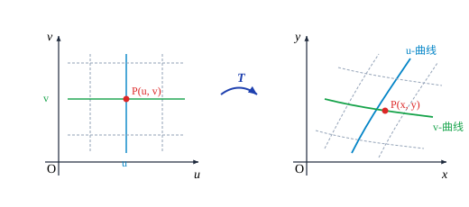
例如，在映射 $T: x = r\cos\theta, y = r\sin\theta$ 下，$\theta$-曲线是一族以原点为圆心的同心圆，$r$-曲线是一族从原点出发的半射线，它们构成平面上的极坐标网．$(r, \theta)$ 为点 $P(x, y)$ 的极坐标．
二重积分的变量代换
现在来建立二重积分的变量代换公式．
设开区域 $U$ 上的映射 $T$ 满足上述条件 (1)—(3)．$D$ 为 $U$ 中的有界闭区域，其边界为分段光滑曲线．若函数 $f(x, y)$ 在 $T(D)$ 上连续，则
$$ \iint_{T(D)} f(x, y)\mathrm{d}x\mathrm{d}y = \iint_D f(x(u, v), y(u, v))\left|\frac{\partial(x, y)}{\partial(u, v)}\right|\mathrm{d}u\mathrm{d}v. $$定理中出现的因子 $\left|\frac{\partial(x, y)}{\partial(u, v)}\right|$ 有明显的几何意义．
设 $T, D$ 满足本节开始时的假定，$(u_0, v_0)$ 是区域 $D$ 中的一点，$\sigma$ 是包含此点的具有分段光滑边界的小区域，并记 $d(\sigma)$ 为 $\sigma$ 的直径（见图 13.3.2），那么由定理 13.3.1 和重积分的中值定理，得
$$ m T(\sigma) = \iint_\sigma \left|\frac{\partial(x, y)}{\partial(u, v)}\right|\mathrm{d}u\mathrm{d}v = \left|\frac{\partial(x, y)}{\partial(u, v)}\right|_{(\bar{u}, \bar{v})} m\sigma = \left(\left|\frac{\partial(x, y)}{\partial(u, v)}\right|_{(u_0, v_0)} + o(1)\right)m\sigma, $$其中 $(\bar{u}, \bar{v}) \in \sigma$，$o(1)$ 是当 $d(\sigma) \to 0$ 时的无穷小量．于是有
$$ \lim_{d(\sigma) \to 0} \frac{m T(\sigma)}{m\sigma} = \left|\frac{\partial(x, y)}{\partial(u, v)}\right|_{(u_0, v_0)}. $$这说明在变换 $T$ 下，$uv$ 平面上的面积微元在点 $(u_0, v_0)$ 处被放大了 $\left|\frac{\partial(x, y)}{\partial(u, v)}\right|_{(u_0, v_0)}$ 倍．换言之，$\left|\frac{\partial(x, y)}{\partial(u, v)}\right|$ 就是在变换 $T$ 下小区域的面积放大率．
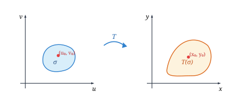
求椭圆区域 $D: \frac{x^2}{a^2} + \frac{y^2}{b^2} \le 1 \; (a, b > 0)$ 的面积．
解 作线性变换
$$ T: \begin{cases} x = au, \\ y = bv. \end{cases} $$其 Jacobi 行列式为
$$ \frac{\partial(x, y)}{\partial(u, v)} = \begin{vmatrix} a & 0 \\ 0 & b \end{vmatrix} = ab > 0. $$显然这个变换将图 13.3.3 中左边的圆盘 $u^2 + v^2 \le 1$ 一一对应地映为右边的椭圆区域 $D$．由于
$$ m D = \iint_D \mathrm{d}x\mathrm{d}y = \iint_{u^2 + v^2 \le 1} ab\,\mathrm{d}u\mathrm{d}v = ab \cdot \pi \cdot 1^2 = \pi ab, $$故椭圆的面积为 $\pi ab$．
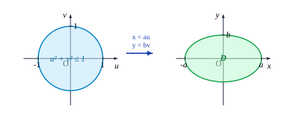
计算区域 $D$ 的面积，其中 $D$ 是由曲线 $xy = p, xy = q, y^2 = ax, y^2 = bx \; (0 < p < q, 0 < a < b)$ 所围成的平面闭区域（见图 13.3.4）．
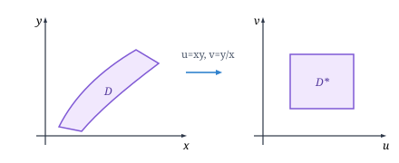
解 在变换 $u = xy, v = \frac{y^2}{x}$ 下，区域 $D$ 被一一对应地映为
$$ D^* = [p, q] \times [a, b]. $$这时有 $x = u^{2/3}v^{-1/3}, y = u^{1/3}v^{1/3}$，于是
$$ \frac{\partial(x, y)}{\partial(u, v)} = \begin{vmatrix} \frac{2}{3}u^{-1/3}v^{-1/3} & -\frac{1}{3}u^{2/3}v^{-4/3} \\ \frac{1}{3}u^{-2/3}v^{1/3} & \frac{1}{3}u^{1/3}v^{-2/3} \end{vmatrix} = \frac{2}{9}v^{-1} + \frac{1}{9}v^{-1} = \frac{1}{3v}. $$因此，所求面积为
$$ m D = \iint_D \mathrm{d}x\mathrm{d}y = \iint_{D^*} \left|\frac{\partial(x, y)}{\partial(u, v)}\right|\mathrm{d}u\mathrm{d}v = \int_p^q \mathrm{d}u \int_a^b \frac{1}{3v}\mathrm{d}v = \frac{1}{3}(q - p)\ln\frac{b}{a}. $$极坐标变换
$$ x = r\cos\theta, \quad y = r\sin\theta, \quad 0 \le \theta \le 2\pi, \; 0 \le r < +\infty $$是我们十分熟悉的．除原点与正实轴外，它是一一对应的，这时
$$ \frac{\partial(x, y)}{\partial(r, \theta)} = \begin{vmatrix} \cos\theta & -r\sin\theta \\ \sin\theta & r\cos\theta \end{vmatrix} = r. $$计算 $\iint_D \sin\left(\pi\sqrt{x^2 + y^2}\right)\mathrm{d}x\mathrm{d}y$，其中 $D = \{(x, y) \mid x^2 + y^2 \le 1\}$．
解 引入极坐标变换 $x = r\cos\theta, y = r\sin\theta$，那么 $D$ 对应于区域 $D^* = \{(r, \theta) \mid 0 \le r \le 1, 0 \le \theta \le 2\pi\}$．因此
$$ \iint_D \sin\left(\pi\sqrt{x^2 + y^2}\right)\mathrm{d}x\mathrm{d}y = \iint_{D^*} (\sin\pi r)\left|\frac{\partial(x, y)}{\partial(r, \theta)}\right|\mathrm{d}r\mathrm{d}\theta = \int_0^{2\pi}\mathrm{d}\theta \int_0^1 (\sin\pi r)r\mathrm{d}r = 2\pi \cdot \frac{1}{\pi} = 2. $$严格说来，由于极坐标变换在原点与正实轴上不是一对一的，在应用变量代换公式时，应该去掉原点与正实轴，也就是说，应该用以下方法来计算（积分区域如图 13.3.5）：
$$ \iint_D \sin\left(\pi\sqrt{x^2 + y^2}\right)\mathrm{d}x\mathrm{d}y = \lim_{\varepsilon \to 0, \delta \to 0} \iint_{D_{\varepsilon, \delta}} \sin\left(\pi\sqrt{x^2 + y^2}\right)\mathrm{d}x\mathrm{d}y $$ $$ = \lim_{\varepsilon \to 0, \delta \to 0} \int_\delta^{2\pi - \delta}\mathrm{d}\theta \int_\varepsilon^1 (\sin\pi r)r\mathrm{d}r = 2. $$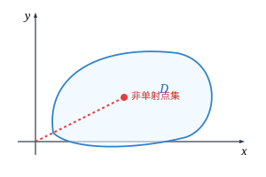
这种方法的实质就是，在原积分区域 $D$ 上适当挖掉一个（或几个）包含非一一对应点集的小区域，从而得到一个区域 $D_\varepsilon$，再将被积函数在 $D$ 上的积分看作在 $D_\varepsilon$ 上的积分当 $D_\varepsilon$ 趋于 $D$ 时的极限．但在了解这种原理之后，就不必每次都照此办理，可直接仿照第一种方法直接计算．
求抛物面 $x^2 + y^2 = 2az$ 和锥面 $z = 2a - \sqrt{x^2 + y^2} \; (a > 0)$ 所围成立体（见图 13.3.6）的体积．
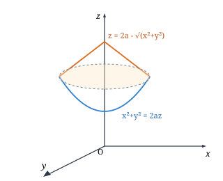
解 易求得两曲面的交线在 $xy$ 平面的投影为圆 $x^2 + y^2 = a^2$．利用极坐标变换得到所求立体的体积为
$$ V = \iint_{x^2 + y^2 \le a^2} \left(2a - \sqrt{x^2 + y^2} - \frac{x^2 + y^2}{2a}\right)\mathrm{d}x\mathrm{d}y = \int_0^{2\pi}\mathrm{d}\theta \int_0^a \left(2a - r - \frac{r^2}{2a}\right)r\mathrm{d}r = \frac{7}{6}\pi a^3. $$求曲线 $\left(\frac{x^2}{a^2} + \frac{y^2}{b^2}\right)^2 = \frac{x^2}{a^2} - \frac{y^2}{b^2} \; (a, b > 0)$ 所围图形（见图 13.3.7）的面积．
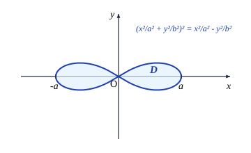
解 由曲线方程可以看出，该图形关于原点及两坐标轴对称，因此只需计算其在第一象限部分的面积，再乘以 4 即得总面积．引入广义极坐标变换
$$ x = ar\cos\theta, \quad y = br\sin\theta. $$这个变换的 Jacobi 行列式为
$$ \frac{\partial(x, y)}{\partial(r, \theta)} = \begin{vmatrix} a\cos\theta & -ar\sin\theta \\ b\sin\theta & br\cos\theta \end{vmatrix} = abr. $$曲线在第一象限的方程为 $r^2 = \cos 2\theta \; \left(0 \le \theta \le \frac{\pi}{4}\right)$．因此所求的面积为
$$ S = 4 \int_0^{\pi/4}\mathrm{d}\theta \int_0^{\sqrt{\cos 2\theta}} abr\,\mathrm{d}r = 2ab \int_0^{\pi/4} \cos 2\theta\mathrm{d}\theta = ab. $$变量代换公式的证明
设开集 $U$ 与映射 $T$ 满足前面的假设，$D$ 是 $U$ 中的具有分段光滑边界的有界闭区域，显然 $D$ 可以包含在一个矩形 $[a, b] \times [c, d]$ 中．分别将区间 $[a, b]$ 和 $[c, d]$ 作 $2^n$ 等分，并以这些分点作平行于坐标轴的直线，就得到了此矩形和 $D$ 的划分．包含于 $D$ 的那些小矩形全体构成了一个 $D$ 中的多边形 $A_n$，而与 $D$ 的交非空的那些小矩形全体构成了一个包含 $D$ 的多边形 $B_n$．容易看出（见图 13.3.8）
$$ A_n \subset A_{n+1} \subset D \subset B_{n+1} \subset B_n. $$记 $C_n = B_n \setminus A_n$，则 $C_n$ 也是由小矩形拼成的，而且它包含了 $D$ 的边界 $\partial D$．由于 $D$ 是可求面积的，易知
$$ \lim_{n \to \infty} m A_n = \lim_{n \to \infty} m B_n = m D, \quad \lim_{n \to \infty} m C_n = 0. $$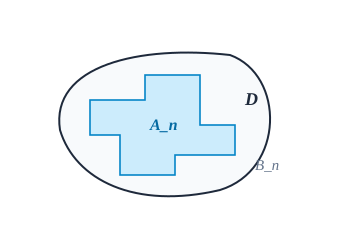
先对如下定义的本原映射来证明定理 13.3.1．
形如
$$ T_1: \begin{cases} x = \varphi(u, v), \\ y = v \end{cases} \quad \text{或} \quad T_2: \begin{cases} x = u, \\ y = \psi(u, v) \end{cases} $$的映射称为本原映射．
取充分大的 $n$，使得 $B_n \subset U$，那么下面的结果成立．
设 $T$ 为本原映射，则对于每个属于 $B_n$ 的小矩形 $R$，等式
$$ m T(R) = \left|\frac{\partial(x, y)}{\partial(u, v)}\right|_{(\bar{u}, \bar{v})} m R $$成立，这里 $(\bar{u}, \bar{v})$ 为 $R$ 上某一点．
证 仅对本原映射 $T_2$ 证明，对 $T_1$ 是类似的．
设在 $U$ 上 $J > 0$．由于这时成立
$$ J = \begin{vmatrix} 1 & 0 \\ \frac{\partial y}{\partial u} & \frac{\partial y}{\partial v} \end{vmatrix} = \frac{\partial y}{\partial v} > 0, $$所以在每个包含于 $B_n$ 中的小矩形（见图 13.3.9）$R = [e, f] \times [g, h]$ 上，对于固定的 $u$，$y(u, v)$ 是 $v$ 的严格单调增加函数，因此 $R$ 被一一对应地映到
$$ T(R) = \{(x, y) \mid e \le x \le f, y(x, g) \le y \le y(x, h)\}. $$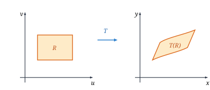
所以 $T(R)$ 的面积为
$$ m T(R) = \iint_{T(R)} \mathrm{d}x\mathrm{d}y = \int_e^f \mathrm{d}x \int_{y(x, g)}^{y(x, h)}\mathrm{d}y = \int_e^f [y(x, h) - y(x, g)]\mathrm{d}x = [y(\bar{u}, h) - y(\bar{u}, g)](f - e), $$其中 $e \le \bar{u} \le f$，最后一步是利用了积分第一中值定理．再用一次微分中值定理得
$$ m T(R) = \frac{\partial y}{\partial v}(\bar{u}, \bar{v})(f - e)(h - g) = \left|\frac{\partial(x, y)}{\partial(u, v)}\right|_{(\bar{u}, \bar{v})} m R, $$其中 $g < \bar{v} < h$．
如果 $T$ 的 Jacobi 行列式为负的，以上讨论中关于 $y$ 的不等式反向，重复以上证明同样可得到结论．
注意到 $\frac{\partial(x, y)}{\partial(u, v)}$ 在 $U$ 上的连续性，我们可以找到一个与 $n$ 无关的正数 $K > 0$，使得当 $n$ 充分大时，总成立
$$ \left|\frac{\partial(x, y)}{\partial(u, v)}\right| \le K, \quad \forall (u, v) \in B_n. $$由于 $C_n$ 是由 $B_n$ 中的一些小矩形拼成的，于是由以上引理得到
$$ m T(C_n) \le K m C_n. $$因此 $\lim_{n \to \infty} m T(C_n) = 0$．下面再证明变量代换公式对于本原映射成立．
设 $T$ 为本原映射，二元函数 $f(x, y)$ 在 $T(D)$ 上连续，则
$$ \iint_{T(D)} f(x, y)\mathrm{d}x\mathrm{d}y = \iint_D f(x(u, v), y(u, v))\left|\frac{\partial(x, y)}{\partial(u, v)}\right|\mathrm{d}u\mathrm{d}v. $$证 记 $M = \max_{(x, y) \in T(D)} |f(x, y)|$．由 $f$ 在紧集 $T(D)$ 上一致连续及引理 13.3.1，对于小矩形划分 $D_i \subset A_n$，由 Riemann 和的逼近性，令划分的最大直径趋于零，取极限即得到二重积分的等式成立．
若 $T$ 满足定理 13.3.1 的假设，则对于任意 $Q_0 = (u_0, v_0) \in U$，$T$ 在 $Q_0$ 附近可以表示成两个具有连续导数的、一对一的本原映射的复合．
证 由于 $J(u_0, v_0) \ne 0$，行列式中必有元素不为零．不妨设 $\frac{\partial x}{\partial u}(u_0, v_0) \ne 0$．于是，本原映射
$$ T_1: \begin{cases} \xi = x(u, v), \\ \eta = v \end{cases} $$的 Jacobi 行列式在 $(u_0, v_0)$ 点不为零，由反函数定理，存在局部反映射使得 $u = g(\xi, \eta), v = \eta$．再作本原映射
$$ T_2: \begin{cases} x = \xi, \\ y = y(g(\xi, \eta), \eta), \end{cases} $$则显然有 $T_2 \circ T_1 = T$．
定理 13.3.1 的证明（续）
根据引理 13.3.3，对于每个点 $Q = (u, v) \in D$，存在一个邻域 $U_\delta(Q)$，在此邻域内映射 $T$ 可以分解为两个本原映射的复合：$T = T_2 \circ T_1$．由于 $D$ 是紧集，根据 Heine-Borel 有限覆盖定理，存在有限个这样的邻域覆盖 $D$．由引理 13.3.2 对本原映射成立的变量代换公式以及复合映射的 Jacobi 行列式乘法法则
$$ \frac{\partial(x, y)}{\partial(u, v)} = \frac{\partial(x, y)}{\partial(\xi, \eta)} \cdot \frac{\partial(\xi, \eta)}{\partial(u, v)}, $$结合紧集上的划分与极限逼近，即完全证明了定理 13.3.1．
$n$ 重积分的变量代换
二重积分的变量代换公式可以推广到 $n$ 重积分（$n \ge 3$）的情形．
设 $U$ 是 $\mathbf{R}^n$ 中的开区域，映射 $T: U \to \mathbf{R}^n$ 是一对一的，具有连续的一阶偏导数，且其 Jacobi 行列式
$$ J = \frac{\partial(x_1, x_2, \dots, x_n)}{\partial(u_1, u_2, \dots, u_n)} \ne 0, \quad \forall \boldsymbol{u} \in U. $$设 $\Omega$ 为 $U$ 中的有界闭区域，其边界为分块光滑超曲面．如果 $f(x_1, x_2, \dots, x_n)$ 是 $T(\Omega)$ 上的连续函数，那么变量代换公式
$$ \idotsint_{T(\Omega)} f(x_1, \dots, x_n)\mathrm{d}x_1\cdots\mathrm{d}x_n = \idotsint_\Omega f(x_1(\boldsymbol{u}), \dots, x_n(\boldsymbol{u})) \left|\frac{\partial(x_1, \dots, x_n)}{\partial(u_1, \dots, u_n)}\right| \mathrm{d}u_1\cdots\mathrm{d}u_n $$成立．
这个定理的证明思想与定理 13.3.1 类似，只是过程复杂得多，在此从略．
三维空间中有两种非常重要的变换，一种是柱面坐标变换（见图 13.3.10）
$$ \begin{cases} x = r\cos\theta, \\ y = r\sin\theta, \\ z = z, \end{cases} $$它将 $0 \le r < +\infty, 0 \le \theta \le 2\pi, -\infty < z < +\infty$ 映为整个 $xyz$ 空间，变换的 Jacobi 行列式为
$$ \frac{\partial(x, y, z)}{\partial(r, \theta, z)} = \begin{vmatrix} \cos\theta & -r\sin\theta & 0 \\ \sin\theta & r\cos\theta & 0 \\ 0 & 0 & 1 \end{vmatrix} = r. $$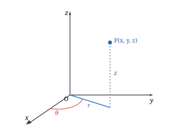
另一种是球面坐标变换（见图 13.3.11）
$$ \begin{cases} x = r\sin\varphi\cos\theta, \\ y = r\sin\varphi\sin\theta, \\ z = r\cos\varphi, \end{cases} $$它将 $0 \le r < +\infty, 0 \le \varphi \le \pi, 0 \le \theta \le 2\pi$ 映为整个 $xyz$ 空间，变换的 Jacobi 行列式为
$$ \frac{\partial(x, y, z)}{\partial(r, \varphi, \theta)} = r^2 \sin\varphi. $$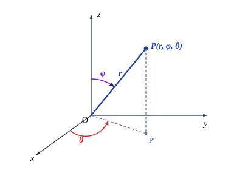
计算 $\iiint_\Omega (x^2 + y^2)\mathrm{d}x\mathrm{d}y\mathrm{d}z$，其中 $\Omega$ 为抛物面 $z = x^2 + y^2$ 与平面 $z = h \; (h > 0)$ 所围成立体（见图 13.3.12）．
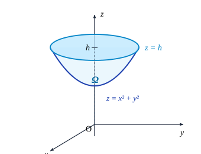
解 引入柱面坐标变换 $x = r\cos\theta, y = r\sin\theta, z = z$．在此变换下 $\Omega$ 对应于 $r\theta z$ 空间的区域 $\Omega^* = \{(r, \theta, z) \mid 0 \le \theta \le 2\pi, 0 \le r \le \sqrt{h}, r^2 \le z \le h\}$，因此
$$ \iiint_\Omega (x^2 + y^2)\mathrm{d}x\mathrm{d}y\mathrm{d}z = \iiint_{\Omega^*} r^2 \cdot r\mathrm{d}r\mathrm{d}\theta\mathrm{d}z = \int_0^{2\pi}\mathrm{d}\theta \int_0^{\sqrt{h}}\mathrm{d}r \int_{r^2}^h r^3 \mathrm{d}z = 2\pi \int_0^{\sqrt{h}} r^3(h - r^2)\mathrm{d}r = \frac{\pi h^3}{6}. $$求球面 $x^2 + y^2 + z^2 = 2Rz$ 与锥面 $z = \sqrt{x^2 + y^2}$ 所围成的立体 $\Omega$ 的质心（见图 13.3.13），设此立体具有均匀密度 $\rho = 1$．
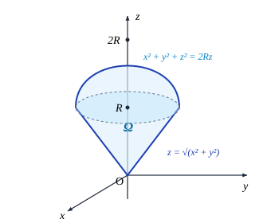
解 引入球面坐标变换，立体 $\Omega$ 对应的区域为
$$ \Omega^* = \left\{(r, \varphi, \theta) \;\middle|\; 0 \le \theta \le 2\pi, 0 \le \varphi \le \frac{\pi}{4}, 0 \le r \le 2R\cos\varphi\right\}. $$立体的质量为
$$ M = \iiint_\Omega \mathrm{d}x\mathrm{d}y\mathrm{d}z = \int_0^{2\pi}\mathrm{d}\theta \int_0^{\pi/4}\sin\varphi\mathrm{d}\varphi \int_0^{2R\cos\varphi} r^2 \mathrm{d}r = \frac{16}{3}\pi R^3 \int_0^{\pi/4} \cos^3\varphi\sin\varphi\mathrm{d}\varphi = \pi R^3. $$由对称性可知 $\bar{x} = \bar{y} = 0$．而
$$ \iiint_\Omega z\,\mathrm{d}x\mathrm{d}y\mathrm{d}z = \int_0^{2\pi}\mathrm{d}\theta \int_0^{\pi/4}\mathrm{d}\varphi \int_0^{2R\cos\varphi} (r\cos\varphi) r^2 \sin\varphi\mathrm{d}r = \frac{7}{6}\pi R^4. $$因此质心坐标为 $\left(0, 0, \frac{7}{6}R\right)$．
计算 $\iiint_\Omega z \mathrm{e}^{-(x^2 + y^2 + z^2)}\mathrm{d}x\mathrm{d}y\mathrm{d}z$，其中 $\Omega$ 是由上半球面 $z = \sqrt{1 - x^2 - y^2}$ 和 $xy$ 平面所围成的闭区域（见图 13.3.14）．
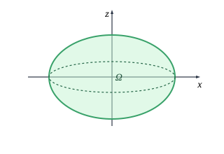
解 引入球面坐标变换，$\Omega$ 对应于区域 $\Omega^* = \left\{(r, \varphi, \theta) \mid 0 \le \theta \le 2\pi, 0 \le r \le 1, 0 \le \varphi \le \frac{\pi}{2}\right\}$．因此
$$ \iiint_\Omega z \mathrm{e}^{-(x^2 + y^2 + z^2)}\mathrm{d}x\mathrm{d}y\mathrm{d}z = \int_0^{2\pi}\mathrm{d}\theta \int_0^{\pi/2}\cos\varphi\sin\varphi\mathrm{d}\varphi \int_0^1 (r\mathrm{e}^{-r^2}) r^2 \mathrm{d}r = \frac{\pi}{2}\left(1 - \frac{2}{\mathrm{e}}\right). $$求椭球体 $\Omega = \left\{(x, y, z) \;\middle|\; \frac{x^2}{a^2} + \frac{y^2}{b^2} + \frac{z^2}{c^2} \le 1\right\} \; (a, b, c > 0)$ 的体积（见图 13.3.15）．
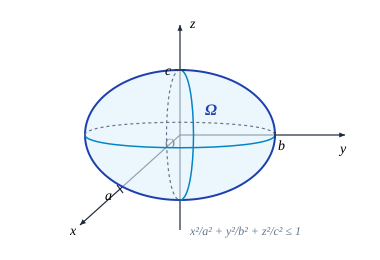
解 引入广义球面坐标变换
$$ x = ar\sin\varphi\cos\theta, \quad y = br\sin\varphi\sin\theta, \quad z = cr\cos\varphi, $$于是 $\Omega$ 对应于区域 $\Omega^* = \{(r, \varphi, \theta) \mid 0 \le \theta \le 2\pi, 0 \le r \le 1, 0 \le \varphi \le \pi\}$．此变换的 Jacobi 行列式为
$$ \frac{\partial(x, y, z)}{\partial(r, \varphi, \theta)} = abc r^2 \sin\varphi. $$因此椭球的体积为
$$ V = \iiint_\Omega \mathrm{d}x\mathrm{d}y\mathrm{d}z = \int_0^{2\pi}\mathrm{d}\theta \int_0^\pi \sin\varphi\mathrm{d}\varphi \int_0^1 abc r^2 \mathrm{d}r = 2\pi \cdot 2 \cdot \frac{abc}{3} = \frac{4}{3}\pi abc. $$求曲面 $(x^2 + y^2)^2 + z^4 = y(x^2 + y^2)$ 所围立体的体积．
解 由方程可以看出，该曲面位于半空间 $y \ge 0$ 内，且关于 $xy$ 平面和 $yz$ 平面对称．引入球面坐标变换，经计算可得所求立体的体积为
$$ V = \frac{\pi^2}{8}. $$事实上，在 $\mathbf{R}^n \; (n \ge 3)$ 上都可以引入球面坐标变换：
$$ \begin{cases} x_1 = r\cos\varphi_1, \\ x_2 = r\sin\varphi_1\cos\varphi_2, \\ x_3 = r\sin\varphi_1\sin\varphi_2\cos\varphi_3, \\ \quad \cdots \\ x_{n-1} = r\sin\varphi_1\sin\varphi_2\cdots\sin\varphi_{n-2}\cos\varphi_{n-1}, \\ x_n = r\sin\varphi_1\sin\varphi_2\cdots\sin\varphi_{n-2}\sin\varphi_{n-1}, \end{cases} $$其中 $0 \le r < +\infty, 0 \le \varphi_1 \le \pi, \dots, 0 \le \varphi_{n-2} \le \pi, 0 \le \varphi_{n-1} \le 2\pi$．显然 $\sum_{i=1}^n x_i^2 = r^2$．此变换的 Jacobi 行列式为
$$ J = r^{n-1}\sin^{n-2}\varphi_1\sin^{n-3}\varphi_2\cdots\sin\varphi_{n-2}. $$求 $n$ 维球体 $B_n(R) = \{(x_1, x_2, \dots, x_n) \in \mathbf{R}^n \mid x_1^2 + x_2^2 + \cdots + x_n^2 \le R^2\}$ 的体积 $V_n(R)$．
解 利用上述 $n$ 维球面坐标变换，结合 Wallis 公式积分，可得
$$ V_n(R) = \begin{cases} \displaystyle \frac{\pi^m}{m!} R^{2m}, & n = 2m, \\[8pt] \displaystyle \frac{2^{m+1}\pi^m}{(2m + 1)!!} R^{2m+1}, & n = 2m + 1. \end{cases} $$均匀球体的引力场模型
设有一个半径为 $a$ 的均匀球体（密度为常数 $\rho$），我们要计算它所产生的引力场，即求出它对于单位质量的质点的引力．
由对称性，只需考虑球体对位于 $z$ 轴上的具有单位质量的质点 $P_0(0, 0, s) \; (s > 0)$ 的引力．显然，引力在 $x$ 与 $y$ 方向的分量 $F_x = F_y = 0$．用微元法求引力在 $z$ 方向的分量 $F_z$（见图 13.3.16）．
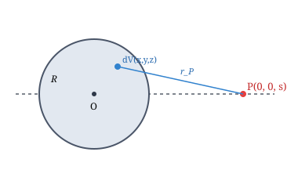
包含球体内点 $P(x, y, z)$ 的体积微元 $\mathrm{d}V$ 的质量为 $\rho\mathrm{d}V$．它对单位质点 $P_0$ 产生的引力在 $z$ 方向的分量为
$$ \mathrm{d}F_z = G\rho \frac{z - s}{[x^2 + y^2 + (z - s)^2]^{3/2}} \mathrm{d}V, $$其中 $G$ 为万有引力常量．作球面坐标变换 $x = r\sin\varphi\cos\theta, y = r\sin\varphi\sin\theta, z = r\cos\varphi$，计算得
$$ F_z = \begin{cases} \displaystyle -G \frac{M}{s^2} = -G \frac{\frac{4}{3}\pi a^3 \rho}{s^2}, & s \ge a, \\[8pt] \displaystyle -G \frac{\frac{4}{3}\pi s^3 \rho}{s^2} = -G \cdot \frac{4}{3}\pi \rho s, & s < a. \end{cases} $$上式的物理意义是：
(1) 当 $s \ge a$ 时，即质点在球体外或球面上，球体对质点的引力等效于将整个球体的质量 $M = \frac{4}{3}\pi a^3 \rho$ 全部集中在球心时对该质点的引力．
(2) 当 $s < a$ 时，即质点在球体内部时，球体对质点的引力等效于一个球心与原球相同，而半径为 $s$ 的球体内质量全部集中于球心时对质点的引力，而外层球壳对质点的引力相互抵消为零．
习题 13.3
-
利用极坐标计算下列二重积分：
- $\iint_D \mathrm{e}^{-(x^2 + y^2)}\mathrm{d}x\mathrm{d}y$，其中 $D$ 是由圆周 $x^2 + y^2 = R^2 \; (R > 0)$ 所围区域；
- $\iint_D \sqrt{x}\mathrm{d}x\mathrm{d}y$，其中 $D$ 是由圆周 $x^2 + y^2 = x$ 所围区域；
- $\iint_D (x + y)\mathrm{d}x\mathrm{d}y$，其中 $D$ 是由圆周 $x^2 + y^2 = x + y$ 所围区域；
- $\iint_D \sqrt{\frac{1 - x^2 - y^2}{1 + x^2 + y^2}}\mathrm{d}x\mathrm{d}y$，其中 $D$ 是由圆周 $x^2 + y^2 = 1$ 及坐标轴所围成的在第一象限上的区域．
-
求下列图形的面积：
- $(a_1 x + b_1 y + c_1)^2 + (a_2 x + b_2 y + c_2)^2 = 1 \; (\delta = a_1 b_2 - a_2 b_1 \ne 0)$ 所围的区域；
- 由抛物线 $y^2 = mx, y^2 = nx \; (0 < m < n)$，直线 $y = \alpha x, y = \beta x \; (0 < \alpha < \beta)$ 所围的区域；
- 三叶玫瑰线 $(x^2 + y^2)^2 = a(x^3 - 3xy^2) \; (a > 0)$ 所围的图形；
- 曲线 $\left(\frac{x}{h} + \frac{y}{k}\right)^4 = \frac{x^2}{a^2} + \frac{y^2}{b^2} \; (h, k > 0; a, b > 0)$ 所围图形在 $x > 0, y > 0$ 的部分．
-
求极限 $$ \lim_{\rho \to 0} \frac{1}{\pi\rho^2} \iint_{x^2 + y^2 \le \rho^2} f(x, y)\mathrm{d}x\mathrm{d}y, $$ 其中 $f(x, y)$ 在原点附近连续．
-
选取适当的坐标变换计算下列二重积分：
- $\iint_D (\sqrt{x} + \sqrt{y})\mathrm{d}x\mathrm{d}y$，其中 $D$ 是由坐标轴及抛物线 $\sqrt{x} + \sqrt{y} = 1$ 所围的区域；
- $\iint_D \left(\frac{x^2}{a^2} + \frac{y^2}{b^2}\right)\mathrm{d}x\mathrm{d}y$，其中 $D$ 是由 i) 椭圆 $\frac{x^2}{a^2} + \frac{y^2}{b^2} = 1$ 所围区域；ii) 圆 $x^2 + y^2 = R^2$ 所围的区域；
- $\iint_D y\mathrm{d}x\mathrm{d}y$，其中 $D$ 是由直线 $x = -2, y = 0, y = 2$，以及曲线 $x = -\sqrt{2y - y^2}$ 所围的区域；
- $\iint_D \mathrm{e}^{\frac{x-y}{x+y}}\mathrm{d}x\mathrm{d}y$，其中 $D$ 是由直线 $x + y = 2, x = 0$ 及 $y = 0$ 所围的区域；
- $\iint_D \frac{(x + y)^2}{1 + (x - y)^2}\mathrm{d}x\mathrm{d}y$，其中闭区域 $D = \{(x, y) \mid |x| + |y| \le 1\}$；
- $\iint_D \frac{\sqrt{x^2 + y^2}}{\sqrt{4a^2 - x^2 - y^2}}\mathrm{d}x\mathrm{d}y$，其中闭区域 $D$ 是由曲线 $y = \sqrt{a^2 - x^2} - a \; (a > 0)$ 和直线 $y = -x$ 所围成．
-
选取适当的坐标变换计算下列三重积分：
- $\iiint_\Omega (x^2 + y^2 + z^2)\mathrm{d}x\mathrm{d}y\mathrm{d}z$，其中 $\Omega$ 为球 $\{(x, y, z) \mid x^2 + y^2 + z^2 \le 1\}$；
- $\iiint_\Omega \sqrt{1 - \frac{x^2}{a^2} - \frac{y^2}{b^2} - \frac{z^2}{c^2}}\mathrm{d}x\mathrm{d}y\mathrm{d}z$，其中 $\Omega$ 为椭球 $\left\{(x, y, z) \;\middle|\; \frac{x^2}{a^2} + \frac{y^2}{b^2} + \frac{z^2}{c^2} \le 1\right\}$；
- $\iiint_\Omega z\sqrt{x^2 + y^2}\mathrm{d}x\mathrm{d}y\mathrm{d}z$，其中 $\Omega$ 为柱面 $y = \sqrt{2x - x^2}$ 及平面 $z = 0, z = a \; (a > 0)$ 和 $y = 0$ 所围的区域；
- $\iiint_\Omega \frac{z\ln(1 + x^2 + y^2 + z^2)}{1 + x^2 + y^2 + z^2}\mathrm{d}x\mathrm{d}y\mathrm{d}z$，其中 $\Omega$ 为半球 $\{(x, y, z) \mid x^2 + y^2 + z^2 \le 1, z \ge 0\}$；
- $\iiint_\Omega (x + y + z)^2 \mathrm{d}x\mathrm{d}y\mathrm{d}z$，其中 $\Omega$ 为抛物面 $x^2 + y^2 = 2az$ 与球面 $x^2 + y^2 + z^2 = 3a^2 \; (a > 0)$ 所围的区域；
- $\iiint_\Omega (x^2 + y^2)\mathrm{d}x\mathrm{d}y\mathrm{d}z$，其中 $\Omega$ 为平面曲线 $\begin{cases} y^2 = 2z, \\ x = 0 \end{cases}$ 绕 $z$ 轴旋转一周形成的曲面与平面 $z = 8$ 所围的区域；
- $\iiint_\Omega \frac{1}{\sqrt{x^2 + y^2 + z^2}}\mathrm{d}x\mathrm{d}y\mathrm{d}z$，其中闭区域 $\Omega = \{(x, y, z) \mid x^2 + y^2 + (z - 1)^2 \le 1\}$；
- $\iiint_\Omega (x + y - z)(x - y + z)(y + z - x)\mathrm{d}x\mathrm{d}y\mathrm{d}z$，其中闭区域 $\Omega = \{(x, y, z) \mid 0 \le x + y - z \le 1, 0 \le x - y + z \le 1, 0 \le y + z - x \le 1\}$．
-
求球面 $x^2 + y^2 + z^2 = R^2$ 和圆柱面 $x^2 + y^2 = Rx \; (R > 0)$ 所围立体的体积．
-
求抛物面 $z = 6 - x^2 - y^2$ 与锥面 $z = \sqrt{x^2 + y^2}$ 所围立体的体积．
-
求下列曲面所围空间区域的体积：
- $\left(\frac{x^2}{a^2} + \frac{y^2}{b^2} + \frac{z^2}{c^2}\right)^2 = ax \; (a, b, c > 0)$；
- $\left(\frac{x}{a} + \frac{y}{b}\right)^2 + \left(\frac{z}{c}\right)^2 = 1 \; (a, b, c > 0)$ 与三张平面 $x = 0, y = 0, z = 0$ 所围的在第一卦限的立体．
-
设一物体在空间的表示为由曲面 $4z^2 = 25(x^2 + y^2)$ 与平面 $z = 5$ 所围成的一立体，其密度为 $\rho(x, y, z) = x^2 + y^2$，求此物体的质量．
-
在一个形状为旋转抛物面 $z = x^2 + y^2$ 的容器内，已经盛有 $8\pi\text{ cm}^3$ 的水，现又倒入 $120\pi\text{ cm}^3$ 的水，问水面比原来升高多少厘米．
-
求质量为 $M$ 的均匀薄片 $\begin{cases} x^2 + y^2 \le a^2, \\ z = 0 \end{cases}$ 对 $z$ 轴上 $(0, 0, c) \; (c > 0)$ 点处的单位质量的质点的引力．
-
已知球体 $x^2 + y^2 + z^2 \le 2Rz$，在其上任一点的密度在数量上等于该点到原点距离的平方，求球体的质量与质心．
-
证明不等式 $$ 2\pi(\sqrt{17} - 4) \le \iint_{x^2 + y^2 \le 1} \frac{\mathrm{d}x\mathrm{d}y}{\sqrt{16 + \sin^2 x + \sin^2 y}} \le \frac{\pi}{4}. $$
-
设一元函数 $f(u)$ 在 $[-1, 1]$ 上连续，证明： $$ \iint_{|x| + |y| \le 1} f(x + y)\mathrm{d}x\mathrm{d}y = \int_{-1}^1 f(u)\mathrm{d}u. $$
-
设一元函数 $f(u)$ 在 $[-1, 1]$ 上连续，证明： $$ \iiint_\Omega f(z)\mathrm{d}x\mathrm{d}y\mathrm{d}z = \pi \int_{-1}^1 f(u)(1 - u^2)\mathrm{d}u, $$ 其中 $\Omega$ 为单位球 $x^2 + y^2 + z^2 \le 1$．
-
计算下列 $n$ 重积分：
- $\int_\Omega \sqrt{x_1 + x_2 + \cdots + x_n}\mathrm{d}x_1\mathrm{d}x_2\cdots\mathrm{d}x_n$，其中 $\Omega = \{(x_1, x_2, \dots, x_n) \mid x_1 + x_2 + \cdots + x_n \le 1, x_i \ge 0, i = 1, 2, \dots, n\}$；
- $\int_\Omega (x_1^2 + x_2^2 + \cdots + x_n^2)\mathrm{d}x_1\mathrm{d}x_2\cdots\mathrm{d}x_n$，其中 $\Omega$ 为 $n$ 维球体 $\{(x_1, x_2, \dots, x_n) \mid x_1^2 + x_2^2 + \cdots + x_n^2 \le 1\}$．
§4 反常重积分
无界区域上的反常重积分
设 $D$ 为平面 $\mathbf{R}^2$ 上的无界区域，它的边界是由有限条光滑曲线组成的．除非特别声明，本节总是假设 $D$ 上的函数 $f(x, y)$ 具有下述性质：它在 $D$ 中有界、在可求面积的有界子区域上可积．并假设所取的割线 $\Gamma$ 为一条面积为零的曲线，它将 $D$ 割出一个有界子区域，记为 $D_r$（见图 13.4.1），并记 $d(\Gamma) = \inf_{(x, y) \in \Gamma} \sqrt{x^2 + y^2}$ 为 $\Gamma$ 到原点的距离．
若当 $d(\Gamma) \to \infty$（即 $D_r$ 趋于 $D$）时，$\iint_{D_r} f(x, y)\mathrm{d}x\mathrm{d}y$ 的极限存在且与所选取的割线族无关，就称 $f(x, y)$ 在 $D$ 上可积，并记
$$ \iint_D f(x, y)\mathrm{d}x\mathrm{d}y = \lim_{d(\Gamma) \to \infty} \iint_{D_r} f(x, y)\mathrm{d}x\mathrm{d}y. $$这个极限值称为 $f(x, y)$ 在 $D$ 上的反常二重积分，这时也称反常二重积分 $\iint_D f(x, y)\mathrm{d}x\mathrm{d}y$ 收敛．如果极限不存在，就称这一反常二重积分发散．
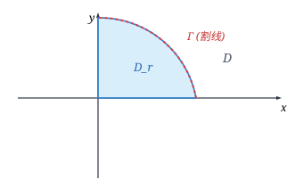
与一元的情形一样，为了容易入手，我们先考虑函数是非负的情况．非负函数的反常二重积分的收敛问题具有特殊的性质．
设 $f(x, y)$ 为无界区域 $D$ 上的非负函数．如果 $\{\Gamma_n\}$ 是一列割线，它们割出的 $D$ 的有界子区域 $\{D_n\}$ 满足
$$ D_1 \subset D_2 \subset \cdots \subset D_n \subset \cdots, \quad \lim_{n \to \infty} d(\Gamma_n) = +\infty, $$则反常积分 $\iint_D f(x, y)\mathrm{d}x\mathrm{d}y$ 在 $D$ 上收敛的充分必要条件是：数列 $\left\{\iint_{D_n} f(x, y)\mathrm{d}x\mathrm{d}y\right\}$ 收敛，且在收敛时成立
$$ \iint_D f(x, y)\mathrm{d}x\mathrm{d}y = \lim_{n \to \infty} \iint_{D_n} f(x, y)\mathrm{d}x\mathrm{d}y. $$证 由定义，必要性显然．充分性可由非负函数的单调有界原理证明．
讨论反常积分 $\iint_{x^2 + y^2 \ge 1} \frac{1}{(x^2 + y^2)^p}\mathrm{d}x\mathrm{d}y$ 的敛散性．
解 取 $D_r = \{(x, y) \mid 1 \le x^2 + y^2 \le r^2\}$，引入极坐标变换得
$$ \iint_{D_r} \frac{1}{(x^2 + y^2)^p}\mathrm{d}x\mathrm{d}y = \int_0^{2\pi}\mathrm{d}\theta \int_1^r \frac{1}{r^{2p}} r\mathrm{d}r = 2\pi \int_1^r r^{1-2p}\mathrm{d}r. $$当 $r \to +\infty$ 时，最后一个积分当 $p > 1$ 时收敛，值等于 $\frac{\pi}{p - 1}$；当 $p \le 1$ 时发散．由引理 13.4.1 即知，当 $p > 1$ 时该反常二重积分收敛；当 $p \le 1$ 时发散．
设 $D$ 为 $\mathbf{R}^2$ 上具有分段光滑边界的无界区域，在 $D$ 上 $0 \le f(x, y) \le g(x, y)$．如果 $\iint_D g(x, y)\mathrm{d}x\mathrm{d}y$ 收敛，则 $\iint_D f(x, y)\mathrm{d}x\mathrm{d}y$ 也收敛；如果 $\iint_D f(x, y)\mathrm{d}x\mathrm{d}y$ 发散，则 $\iint_D g(x, y)\mathrm{d}x\mathrm{d}y$ 也发散．
反常积分 $\iint_D f(x, y)\mathrm{d}x\mathrm{d}y$ 收敛的充分必要条件是：$\forall \varepsilon > 0$，存在 $M > 0$，使得对任意满足 $d(\Gamma_1) > M, d(\Gamma_2) > M$ 的有界子区域 $D_1, D_2$，均有
$$ \left|\iint_{D_1 \triangle D_2} f(x, y)\mathrm{d}x\mathrm{d}y\right| < \varepsilon, $$其中 $D_1 \triangle D_2 = (D_1 \setminus D_2) \cup (D_2 \setminus D_1)$ 为对称差．
若反常积分 $\iint_D |f(x, y)|\mathrm{d}x\mathrm{d}y$ 收敛，则称 $\iint_D f(x, y)\mathrm{d}x\mathrm{d}y$ 绝对收敛．非负函数的收敛必为绝对收敛．对于重积分而言，只有绝对收敛的反常积分才有良好的分析性质．
计算方法：累次积分与变量代换
设 $f(x, y)$ 在 $D = [a, +\infty) \times [c, +\infty)$ 上连续，且 $\int_a^{+\infty}\mathrm{d}x \int_c^{+\infty}|f(x, y)|\mathrm{d}y$ 和 $\int_c^{+\infty}\mathrm{d}y \int_a^{+\infty}|f(x, y)|\mathrm{d}x$ 均收敛，则 $f(x, y)$ 在 $D$ 上绝对收敛，而且
$$ \iint_D f(x, y)\mathrm{d}x\mathrm{d}y = \int_a^{+\infty}\mathrm{d}x \int_c^{+\infty} f(x, y)\mathrm{d}y = \int_c^{+\infty}\mathrm{d}y \int_a^{+\infty} f(x, y)\mathrm{d}x. $$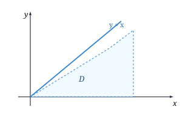
计算著名的 Poisson 积分 $I = \int_{-\infty}^{+\infty} \mathrm{e}^{-x^2}\mathrm{d}x$．
解 考虑全平面 $\mathbf{R}^2$ 上的反常二重积分
$$ J = \iint_{\mathbf{R}^2} \mathrm{e}^{-(x^2 + y^2)}\mathrm{d}x\mathrm{d}y. $$一方面，化为累次积分得
$$ J = \left(\int_{-\infty}^{+\infty}\mathrm{e}^{-x^2}\mathrm{d}x\right)\left(\int_{-\infty}^{+\infty}\mathrm{e}^{-y^2}\mathrm{d}y\right) = I^2. $$另一方面，利用极坐标系与同心圆盘穷竭法（见图 13.4.3），得
$$ J = \lim_{R \to \infty} \iint_{x^2 + y^2 \le R^2} \mathrm{e}^{-(x^2 + y^2)}\mathrm{d}x\mathrm{d}y = \lim_{R \to \infty} \int_0^{2\pi}\mathrm{d}\theta \int_0^R \mathrm{e}^{-r^2} r\mathrm{d}r = \pi. $$因此 $I^2 = \pi$，即
$$ \int_{-\infty}^{+\infty} \mathrm{e}^{-x^2}\mathrm{d}x = \sqrt{\pi}, \quad \int_0^{+\infty} \mathrm{e}^{-x^2}\mathrm{d}x = \frac{\sqrt{\pi}}{2}. $$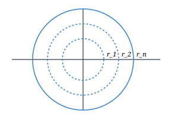
无界函数的反常重积分
设 $D$ 为 $\mathbf{R}^2$ 上的有界闭区域，点 $P_0 \in D$．$f(x, y)$ 在 $D \setminus \{P_0\}$ 上有定义且连续，但在点 $P_0$ 的任何去心邻域内无界．这时 $P_0$ 称为 $f$ 的奇点．
设 $P_0$ 为 $f$ 在 $D$ 内的惟一奇点．在 $D$ 中挖去包含 $P_0$ 的闭子区域 $U_\varepsilon$（见图 13.4.4），若当 $d(U_\varepsilon) \to 0$ 时，极限
$$ \lim_{d(U_\varepsilon) \to 0} \iint_{D \setminus U_\varepsilon} f(x, y)\mathrm{d}x\mathrm{d}y $$存在且与挖去方式无关，则称无界函数的反常二重积分收敛，其极限值即称为反常二重积分，记为 $\iint_D f(x, y)\mathrm{d}x\mathrm{d}y$．
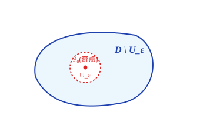
讨论反常积分 $\iint_{x^2 + y^2 \le 1} \frac{1}{(x^2 + y^2)^p}\mathrm{d}x\mathrm{d}y$ 的敛散性．
解 原点 $(0, 0)$ 为惟一奇点．引入极坐标变换，在去心圆盘 $\varepsilon^2 \le x^2 + y^2 \le 1$ 上积分得
$$ \int_0^{2\pi}\mathrm{d}\theta \int_\varepsilon^1 \frac{1}{r^{2p}} r\mathrm{d}r = 2\pi \int_\varepsilon^1 r^{1-2p}\mathrm{d}r. $$当 $\varepsilon \to 0^+$ 时，上式当 $p < 1$ 时收敛，值为 $\frac{\pi}{1 - p}$；当 $p \ge 1$ 时发散．
判断反常重积分 $\iint_D \frac{1}{(x + y)^p}\mathrm{d}x\mathrm{d}y$ 的敛散性，其中 $D = \{(x, y) \mid 0 \le x \le 1, 0 \le y \le 1\}$．
解 奇点位于原点 $(0, 0)$．引入极坐标变换可证，当 $p < 2$ 时收敛，当 $p \ge 2$ 时发散．
计算反常重积分 $\iint_D \frac{x}{\sqrt{1 - x^2 - y^2}}\mathrm{d}x\mathrm{d}y$，其中 $D = \{(x, y) \mid x^2 + y^2 \le 1, x \ge 0, y \ge 0\}$．
解 引入极坐标变换，被积函数的奇线为边界圆周 $r = 1$．
$$ \iint_D \frac{x}{\sqrt{1 - x^2 - y^2}}\mathrm{d}x\mathrm{d}y = \int_0^{\pi/2}\cos\theta\mathrm{d}\theta \int_0^1 \frac{r^2}{\sqrt{1 - r^2}}\mathrm{d}r = 1 \cdot \frac{\pi}{4} = \frac{\pi}{4}. $$计算 $\iint_D \ln\sin(x + y)\mathrm{d}x\mathrm{d}y$，其中 $D = \{(x, y) \mid 0 \le x \le \pi, 0 \le y \le \pi, x + y \le \pi\}$．
解 作变量代换 $u = x + y, v = x - y$，计算可得值为 $-\frac{\pi^2}{2}\ln 2$．
习题 13.4
-
讨论下列反常重积分的敛散性：
- $\iint_{\mathbf{R}^2} \frac{\mathrm{d}x\mathrm{d}y}{(1 + |x|^p)(1 + |y|^q)}$；
- $\iint_D \frac{\varphi(x, y)}{(1 + x^2 + y^2)^p}\mathrm{d}x\mathrm{d}y$，其中 $D = \{(x, y) \mid 0 \le y \le 1\}$，而且 $0 < m \le |\varphi(x, y)| \le M$ ($m, M$ 为常数)；
- $\iint_{x^2 + y^2 \le 1} \frac{\varphi(x, y)}{(1 - x^2 - y^2)^p}\mathrm{d}x\mathrm{d}y$，其中 $\varphi(x, y)$ 满足与上题相同的条件；
- $\iint_{[0, a] \times [0, a]} \frac{\mathrm{d}x\mathrm{d}y}{|x - y|^p}$；
- $\iiint_{x^2 + y^2 + z^2 \le 1} \frac{\mathrm{d}x\mathrm{d}y\mathrm{d}z}{(x^2 + y^2 + z^2)^p}$．
-
计算下列反常重积分：
- $\iint_D \frac{\mathrm{d}x\mathrm{d}y}{x^p y^q}$，其中 $D = \{(x, y) \mid xy \ge 1, x \ge 1\}$，且 $p > q > 1$；
- $\iint_{\frac{x^2}{a^2} + \frac{y^2}{b^2} \ge 1} \mathrm{e}^{-\left(\frac{x^2}{a^2} + \frac{y^2}{b^2}\right)}\mathrm{d}x\mathrm{d}y$；
- $\iiint_{\mathbf{R}^3} \mathrm{e}^{-(x^2 + y^2 + z^2)}\mathrm{d}x\mathrm{d}y\mathrm{d}z$．
-
设 $D$ 是由第一象限内的抛物线 $y = x^2$，圆周 $x^2 + y^2 = 1$ 以及 $x$ 轴所围的平面区域，证明 $\iint_D \frac{\mathrm{d}x\mathrm{d}y}{x^2 + y^2}$ 收敛．
-
判别反常重积分 $$ I = \iint_{\mathbf{R}^2} \frac{\mathrm{d}x\mathrm{d}y}{(1 + x^2)(1 + y^2)} $$ 是否收敛，如果收敛，求其值．
-
设 $F(t) = \iint_{0 \le x \le t, 0 \le y \le t} \mathrm{e}^{-\frac{tx}{y^2}}\mathrm{d}x\mathrm{d}y$，求 $F'(t)$．
-
设函数 $f(x)$ 在 $[0, a]$ 上连续，证明： $$ \iint_{0 \le y \le x \le a} \frac{f(y)}{\sqrt{(a - x)(x - y)}}\mathrm{d}x\mathrm{d}y = \pi \int_0^a f(x)\mathrm{d}x. $$
-
计算积分 $$ \int_{\mathbf{R}^n} \mathrm{e}^{-(x_1^2 + x_2^2 + \cdots + x_n^2)}\mathrm{d}x_1\mathrm{d}x_2\cdots\mathrm{d}x_n. $$
§5 微分形式
有向面积与向量的外积
前面导出二重积分变量代换公式
$$ \iint_{T(D)} f(x, y)\mathrm{d}x\mathrm{d}y = \iint_D f(x(u, v), y(u, v))\left|\frac{\partial(x, y)}{\partial(u, v)}\right|\mathrm{d}u\mathrm{d}v $$时已经指出，加了绝对值号的 Jacobi 行列式 $\left|\frac{\partial(x, y)}{\partial(u, v)}\right|$ 的几何意义是 $xy$ 平面上的面积微元 $\mathrm{d}x\mathrm{d}y$ 与 $uv$ 平面上的面积微元 $\mathrm{d}u\mathrm{d}v$ 之间的比例系数．那么，不加绝对值号的 Jacobi 行列式 $\frac{\partial(x, y)}{\partial(u, v)}$ 的几何意义又是什么呢？一个顺理成章的回答应该是，它代表带符号的面积微元之间的比例系数．
带符号的面积称为有向面积．下面我们从最简单的平行四边形出发，给出一个定义有向面积的例子．
设 $\boldsymbol{a} = (a_1, a_2), \boldsymbol{b} = (b_1, b_2)$ 为平面 $\mathbf{R}^2$ 上两个线性无关向量，$\Pi$ 为 $\mathbf{R}^2$ 上由向量 $\boldsymbol{a}$ 和 $\boldsymbol{b}$ 所张成的平行四边形，我们规定：如果从向量 $\boldsymbol{a}$ 出发在 $\Pi$ 中旋转到 $\boldsymbol{b}$ 是逆时针方向（即 $\boldsymbol{a}$ 的方向、$\boldsymbol{b}$ 的方向和指向读者的方向成右手定则，见图 13.5.1），这个平行四边形的面积为正，否则为负．
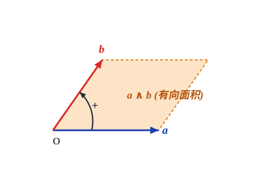
容易看出，二阶行列式
$$ \begin{vmatrix} a_1 & a_2 \\ b_1 & b_2 \end{vmatrix} $$正是由 $\boldsymbol{a}$ 和 $\boldsymbol{b}$ 所张成的平行四边形 $\Pi$ 的有向面积；由解析几何知道，它的绝对值就是 $\Pi$ 在普通意义下的面积．将这两个向量用极坐标表示为
$$ \boldsymbol{a} = (r_1\cos\theta_1, r_1\sin\theta_1), \quad \boldsymbol{b} = (r_2\cos\theta_2, r_2\sin\theta_2). $$若从 $\boldsymbol{a}$ 出发在 $\Pi$ 中旋转到 $\boldsymbol{b}$ 是逆时针方向的，则有 $\theta_1 < \theta_2 < \theta_1 + \pi$，因此
$$ \begin{vmatrix} a_1 & a_2 \\ b_1 & b_2 \end{vmatrix} = r_1 r_2 (\cos\theta_1\sin\theta_2 - \sin\theta_1\cos\theta_2) = r_1 r_2 \sin(\theta_2 - \theta_1) > 0, $$与 $\Pi$ 的有向面积的符号规定一致．此外，若交换 $\boldsymbol{a}$ 和 $\boldsymbol{b}$ 的位置，即从 $\boldsymbol{a}$ 出发在 $\Pi$ 中旋转到 $\boldsymbol{b}$ 是顺时针方向的，则结果反号．
我们将这种运算称为向量 $\boldsymbol{a}$ 与 $\boldsymbol{b}$ 的外积，记为 $\boldsymbol{a} \wedge \boldsymbol{b}$，即
$$ \boldsymbol{a} \wedge \boldsymbol{b} = \begin{vmatrix} a_1 & a_2 \\ b_1 & b_2 \end{vmatrix}. $$易验证外积运算具有以下性质：
(1) 反称性：$\boldsymbol{a} \wedge \boldsymbol{b} = -\boldsymbol{b} \wedge \boldsymbol{a} \quad (\boldsymbol{a}, \boldsymbol{b} \in \mathbf{R}^2)$．因此立即得出 $\boldsymbol{a} \wedge \boldsymbol{a} = 0$．
(2) 双线性（分配律）：
$$ \boldsymbol{a} \wedge (\boldsymbol{b} + \boldsymbol{c}) = \boldsymbol{a} \wedge \boldsymbol{b} + \boldsymbol{a} \wedge \boldsymbol{c}, \quad (\boldsymbol{a} + \boldsymbol{b}) \wedge \boldsymbol{c} = \boldsymbol{a} \wedge \boldsymbol{c} + \boldsymbol{b} \wedge \boldsymbol{c}, \quad (\lambda\boldsymbol{a}) \wedge \boldsymbol{b} = \lambda(\boldsymbol{a} \wedge \boldsymbol{b}) \quad (\lambda \in \mathbf{R}). $$设 $\boldsymbol{e}_1, \boldsymbol{e}_2$ 为 $\mathbf{R}^2$ 上的一组基，$\boldsymbol{a}_1 = a_{11}\boldsymbol{e}_1 + a_{12}\boldsymbol{e}_2, \boldsymbol{a}_2 = a_{21}\boldsymbol{e}_1 + a_{22}\boldsymbol{e}_2$，则
$$ \boldsymbol{a}_1 \wedge \boldsymbol{a}_2 = \begin{vmatrix} a_{11} & a_{12} \\ a_{21} & a_{22} \end{vmatrix} (\boldsymbol{e}_1 \wedge \boldsymbol{e}_2). $$微分形式
在微积分中，一阶全微分 $\mathrm{d}f = \frac{\partial f}{\partial x_1}\mathrm{d}x_1 + \cdots + \frac{\partial f}{\partial x_n}\mathrm{d}x_n$ 是最基本的对象．形式上由基底 $\mathrm{d}x_1, \dots, \mathrm{d}x_n$ 线性组合而成的表达式
$$ \omega = \sum_{i=1}^n a_i(\boldsymbol{x})\mathrm{d}x_i $$称为区域 $U \subset \mathbf{R}^n$ 上的 $1$-微分形式（简称 $1$-形式）．全体 $1$-形式构成一个线性空间，记为 $\Lambda^1(U)$．普通的连续函数 $f(\boldsymbol{x})$ 称为 $0$-形式，记为 $\Lambda^0(U)$．
类似地，我们可以定义 $2$-形式．如果对微分算子 $\mathrm{d}x_i$ 引入外积运算 $\wedge$，满足反称性 $\mathrm{d}x_i \wedge \mathrm{d}x_j = -\mathrm{d}x_j \wedge \mathrm{d}x_i$（特别地 $\mathrm{d}x_i \wedge \mathrm{d}x_i = 0$），那么
$$ \omega = \sum_{1 \le i < j \le n} a_{ij}(\boldsymbol{x})\mathrm{d}x_i \wedge \mathrm{d}x_j $$称为 $U$ 上的 $2$-形式，全体 $2$-形式构成线性空间 $\Lambda^2(U)$．
在 $n = 2$ 时，在坐标变换 $x = x(u, v), y = y(u, v)$ 下，有
$$ \mathrm{d}x = \frac{\partial x}{\partial u}\mathrm{d}u + \frac{\partial x}{\partial v}\mathrm{d}v, \quad \mathrm{d}y = \frac{\partial y}{\partial u}\mathrm{d}u + \frac{\partial y}{\partial v}\mathrm{d}v. $$根据外积的双线性和反称性，得到
$$ \mathrm{d}x \wedge \mathrm{d}y = \left(\frac{\partial x}{\partial u}\mathrm{d}u + \frac{\partial x}{\partial v}\mathrm{d}v\right) \wedge \left(\frac{\partial y}{\partial u}\mathrm{d}u + \frac{\partial y}{\partial v}\mathrm{d}v\right) = \left(\frac{\partial x}{\partial u}\frac{\partial y}{\partial v} - \frac{\partial x}{\partial v}\frac{\partial y}{\partial u}\right)\mathrm{d}u \wedge \mathrm{d}v = \frac{\partial(x, y)}{\partial(u, v)}\mathrm{d}u \wedge \mathrm{d}v. $$这个美妙的公式表明：外积运算自动给出了坐标变换的 Jacobi 行列式！
微分形式的外积
一般地，在 $\mathbf{R}^n$ 上，$k$-形式的形式为
$$ \omega = \sum_{1 \le i_1 < i_2 < \cdots < i_k \le n} a_{i_1 i_2 \cdots i_k}(\boldsymbol{x})\mathrm{d}x_{i_1} \wedge \mathrm{d}x_{i_2} \wedge \cdots \wedge \mathrm{d}x_{i_k}, \quad 1 \le k \le n. $$全体 $k$-形式构成的空间记为 $\Lambda^k(U)$．当 $k > n$ 时，由鸽巢原理，必有两个相同的微分元相乘，从而恒为零，即 $\Lambda^k(U) = \{0\} \; (k > n)$．
设 $\omega \in \Lambda^k(U), \eta \in \Lambda^l(U)$，定义它们的外积 $\omega \wedge \eta \in \Lambda^{k+l}(U)$．外积运算具有以下基本性质：
(1) 反交换律（分次反称性）：
$$ \omega \wedge \eta = (-1)^{kl} \eta \wedge \omega. $$特别地，若 $k$ 为奇数，则 $\omega \wedge \omega = 0$；若 $k$ 为偶数，$\omega \wedge \omega$ 不一定为零．
(2) 结合律：$(\omega \wedge \eta) \wedge \theta = \omega \wedge (\eta \wedge \theta)$．
(3) 分配律：$(\omega + \eta) \wedge \theta = \omega \wedge \theta + \eta \wedge \theta, \quad \omega \wedge (\eta + \theta) = \omega \wedge \eta + \omega \wedge \theta$．
对于 $n$ 维坐标变换 $\boldsymbol{y} = \boldsymbol{y}(\boldsymbol{x})$，根据外积性质有
$$ \mathrm{d}y_1 \wedge \mathrm{d}y_2 \wedge \cdots \wedge \mathrm{d}y_n = \det\left(\frac{\partial y_i}{\partial x_j}\right) \mathrm{d}x_1 \wedge \mathrm{d}x_2 \wedge \cdots \wedge \mathrm{d}x_n = \frac{\partial(y_1, y_2, \dots, y_n)}{\partial(x_1, x_2, \dots, x_n)} \mathrm{d}x_1 \wedge \mathrm{d}x_2 \wedge \cdots \wedge \mathrm{d}x_n. $$这说明在坐标变换下，基本 $n$-形式之间相差的因子正好就是映射的 Jacobi 行列式．如果也将 $\mathrm{d}y_1 \wedge \cdots \wedge \mathrm{d}y_n$ 和 $\mathrm{d}x_1 \wedge \cdots \wedge \mathrm{d}x_n$ 看成坐标系中的有向体积微元，那么就成立用微分形式表示的重积分变量代换公式：
$$ \idotsint_{T(D)} f(\boldsymbol{y})\mathrm{d}y_1 \wedge \cdots \wedge \mathrm{d}y_n = \idotsint_D f(\boldsymbol{y}(\boldsymbol{x})) \frac{\partial(y_1, \dots, y_n)}{\partial(x_1, \dots, x_n)} \mathrm{d}x_1 \wedge \cdots \wedge \mathrm{d}x_n. $$这在后续学习曲线积分、曲面积分和流形微积分时，会带来极大的数学统摄力与运算简便性．这也是引入微分形式的重要目的之一．
习题 13.5
-
计算下列外积：
- $(x\mathrm{d}x + 7z^2\mathrm{d}y) \wedge (y\mathrm{d}x - x\mathrm{d}y + 6\mathrm{d}z)$；
- $(\cos y\mathrm{d}x + \cos x\mathrm{d}y) \wedge (\sin y\mathrm{d}x - \sin x\mathrm{d}y)$；
- $(6\mathrm{d}x \wedge \mathrm{d}y + 27\mathrm{d}x \wedge \mathrm{d}z) \wedge (\mathrm{d}x + \mathrm{d}y + \mathrm{d}z)$．
-
设 $$ \omega = a_0 + a_1\mathrm{d}x_1 + a_2\mathrm{d}x_1 \wedge \mathrm{d}x_3 + a_3\mathrm{d}x_2 \wedge \mathrm{d}x_3 \wedge \mathrm{d}x_4, $$ $$ \eta = b_1\mathrm{d}x_1 \wedge \mathrm{d}x_2 + b_2\mathrm{d}x_1 \wedge \mathrm{d}x_3 + b_3\mathrm{d}x_1 \wedge \mathrm{d}x_2 \wedge \mathrm{d}x_3 + b_4\mathrm{d}x_2 \wedge \mathrm{d}x_3 \wedge \mathrm{d}x_4. $$ 求 $\omega + \eta$ 和 $\omega \wedge \eta$．
-
求 $$ \omega = x_1\mathrm{d}x_1 \wedge \mathrm{d}x_2 + x_3\mathrm{d}x_2 \wedge \mathrm{d}x_3 + (1 + x_2^2)\mathrm{d}x_1 \wedge \mathrm{d}x_3 + x_2^2\mathrm{d}x_3 \wedge \mathrm{d}x_1 + (x_3^2 + x_2^2)\mathrm{d}x_2 \wedge \mathrm{d}x_1 \wedge \mathrm{d}x_3 - x_1^2\mathrm{d}x_3 \wedge \mathrm{d}x_2 $$ 的标准形式．
-
证明外积满足分配律和结合律．
-
写出微分形式 $\mathrm{d}x \wedge \mathrm{d}y \wedge \mathrm{d}z$ 在下列变换下的表达式：
- 柱面坐标变换：$x = r\cos\theta, y = r\sin\theta, z = z$；
- 球面坐标变换：$x = r\sin\varphi\cos\theta, y = r\sin\varphi\sin\theta, z = r\cos\varphi$．
-
设 $\omega_j = \sum_{i=1}^n a_i^j\mathrm{d}x_i \; (j = 1, 2, \dots, n)$ 为 $\mathbf{R}^n$ 上的 $1$-形式，证明 $$ \omega_1 \wedge \omega_2 \wedge \cdots \wedge \omega_n = \det(a_i^j) \mathrm{d}x_1 \wedge \mathrm{d}x_2 \wedge \cdots \wedge \mathrm{d}x_n. $$